Cold War Terms
.pdf (. . . )


The 1980 Summer Olympics, officially known as the Games of the XXII Olympiad, was an international multi-sport event celebrated in Moscow in the Soviet Union. . . The United States and a number of other countries boycotted the games because of the Soviet invasion of Afghanistan, though some athletes from some of the boycotting countries participated in the games, under the Olympic Flag. This prompted the Soviet-led boycott of the 1984 Summer Olympics. (wikipedia.org. Accessed on September 1, 2011.)

The boycott of the 1984 Summer Olympics in Los Angeles, California. The boycott was a follow up to the American-led boycott of the 1980 Summer Olympics in Moscow. The boycott involved 14 Eastern Bloc countries and allies, led by the Soviet Union who initiated the boycott on May 8, 1984, and joined by others, including East Germany, Czechoslovakia, Hungary and Cuba. Romania, considered a Soviet ally, notably did not withdraw, instead turning up in Los Angeles for the Games held on July 28 through August 12. The Friendship Games, an alternative event, was established instead. (wikipedia.org. Accessed on September 1, 2011.)
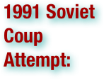

The 1991 Soviet coup d'état attempt (19–21 August 1991), also known as the August Putsch or August Coup, was an attempt by a group of members of the Soviet Union's government to take control of the country from Soviet president Mikhail Gorbachev. The coup leaders were hard-line members of the Communist Party of the Soviet Union (CPSU) who were opposed to Gorbachev's reform program and the new union treaty that he had negotiated which decentralized much of the central government's power to the republics. They were opposed, mainly in Moscow, by a short but effective campaign of civil resistance. Although the coup collapsed in only two days and Gorbachev returned to government, the event destabilized the USSR and is widely considered to have led to both the demise of the CPSU and the dissolution of the Soviet Union. (wikipedia.org. Accessed on September 1, 2011.)

The 26th of July Movement was the revolutionary organization planned and led by Fidel Castro that in 1959 overthrew the Fulgencio Batista government in Cuba. The Movement fought the Batista regime on both rural and urban fronts. (wikipedia.org. Accessed on September 1, 2011.)


The Action Program is a political plan, devised by Alexander Dubček and his associates in the Communist Party of Czechoslovakia (KSČ), that was published on April 5, 1968. The program suggested that the Czechoslovak Socialist Republic (ČSSR) find its own path towards mature socialism rather than follow the Soviet Union. AP called for the acknowledgment of individual liberties, the introduction of political and economic reforms, and a change in the structure of the nation. In many ways, the document was the basis for Prague Spring and prompted the ensuing Warsaw Pact invasion of the ČSSR in August, 1968. (wikipedia.org. Accessed on September 1, 2011.)
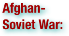

The Soviet war in Afghanistan was a nine-year conflict involving the Soviet Union, supporting the Marxist-Leninist government of the Democratic Republic of Afghanistan against the Afghan Mujahideen and foreign "Arab–Afghan" volunteers. The mujahideen got unofficial military and/or financial support from a variety of countries including the United States, Saudi Arabia, the United Kingdom, Pakistan, Israel, Taiwan, Indonesia and China. The Afghan government was also supported by India. The Afghan war became a proxy war in the broader context of the late Cold War. The initial Soviet deployment of the 40th Army in Afghanistan began on December 24, 1979 under Soviet premier Leonid Brezhnev. The final troop withdrawal started on May 15, 1988, and ended on February 15, 1989 under the last Soviet leader Mikhail Gorbachev. Due to the interminable nature of the war, the conflict in Afghanistan has sometimes been referred to as the "Soviet Union's Vietnam War". (wikipedia.org. Accessed on September 1, 2011.)
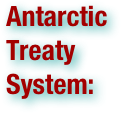

The Antarctic Treaty and related agreements, collectively called the Antarctic Treaty System or ATS, regulate international relations with respect to Antarctica, Earth's only continent without a native human population. For the purposes of the treaty system, Antarctica is defined as all of the land and ice shelves south of 60°S latitude. The treaty, entering into force in 1961 and currently has 48 signatory nations, sets aside Antarctica as a scientific preserve, establishes freedom of scientific investigation and bans military activity on that continent. The treaty was the first arms control agreement established during the Cold War. The Antarctic Treaty Secretariat headquarters have been located in Buenos Aires, Argentina, since September 2004. (wikipedia.org. Accessed on September 1, 2011.)
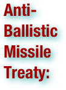

The Anti-Ballistic Missile Treaty (ABM Treaty or ABMT) was a treaty between the United States and the Soviet Union on the limitation of the anti-ballistic missile (ABM) systems used in defending areas against missile-delivered nuclear weapons. Signed in 1972, it was in force for the next 30 years until the US unilaterally withdrew from it in June 2002. . . As relations between the US and USSR warmed in the later years of the 1960s, the US first proposed an ABM treaty in 1967. This proposal was rejected. Following the proposal of the Sentinel and Safeguard decisions on American ABM systems, the Strategic Arms Limitation Talks began in November 1969 (SALT I). By 1972 an agreement had been reached to limit strategic defensive systems. . . The treaty was signed in Moscow on May 26, 1972 by the President of the United States, Richard Nixon and the General Secretary of the Communist Party of the Soviet Union, Leonid Brezhnev; and ratified by the US Senate on August 3, 1972. . . It was seen by many in the West as a key piece in nuclear arms control, being an implicit recognition of the need to protect the nuclear balance by ensuring neither side could hope to reduce the effects of retaliation to acceptable levels. In the East, however, it was seen as a way to avoid having to maintain an anti-missile technology race at the same time as maintaining a missile race. . . For many years the ABM Treaty was, in the West, considered one of the landmarks in arms limitations. It was perceived as requiring two enemies to agree not to deploy a potentially useful weapon, deliberately to maintain the balance of power and as such, was also taken as confirmation of the Soviet adherence to the MAD doctrine. (wikipedia.org. Accessed on September 1, 2011.)

The Apollo program was the spaceflight effort that landed the first humans on Earth's Moon. Conceived during the Presidency of Dwight D. Eisenhower and carried out by the National Aeronautics and Space Administration of the United States (NASA), Apollo began in earnest after President John F. Kennedy proposed the national "goal of landing a man on the Moon and returning him safely to the Earth" by the end of the decade in a May 25, 1961 address to Congress. Kennedy's goal was accomplished with the Apollo 11 mission when astronauts Neil Armstrong and Buzz Aldrin landed their Lunar Module (LM) on the Moon on July 20, 1969 and walked on its surface while Michael Collins remained in lunar orbit in the command spacecraft, and all three landed safely on Earth on July 24. Five subsequent Apollo missions also landed astronauts on the Moon, the last in December 1972. In these six spaceflights, 12 men walked on the Moon. These are the only times humans have landed on another celestial body. . . Apollo set major milestones in human spaceflight. It stands alone in sending manned missions beyond low Earth orbit; Apollo 8 was the first manned spacecraft to orbit another celestial body, while Apollo 17 marked the last moonwalk and the last manned mission beyond low Earth orbit. The program spurred advances in many areas of technology incidental to rocketry and manned spaceflight, including avionics, telecommunications, and computers. Apollo also sparked interest in many fields of engineering and left many physical facilities and machines developed for the program as landmarks. (wikipedia.org. Accessed on September 1, 2011.)


The term arms race, in its original usage, describes a competition between two or more parties for the best armed forces. Each party competes to produce larger numbers of weapons, greater armies, or superior military technology in a technological escalation. . . A nuclear arms race developed during the Cold War, a period of high tensions between the Soviet Union and the America. On both sides, perceived advantages of the adversary (such as the "missile gap") led to large spending on armaments and the stockpiling of vast nuclear arsenals. Proxy wars were fought all over the world (e.g. in the Middle East, Korea, Vietnam) in which the superpowers' conventional weapons were pitted against each other. After the dissolution of the Soviet Union and the end of the Cold War, tensions decreased and the nuclear arsenal of both countries were reduced. (wikipedia.org. Accessed on September 1, 2011.)

The ash heap of history (or often garbage heap of history or dustbin of history) is a figurative place to where objects such as persons, events, artifacts, ideologies, etc. are relegated when they are forgotten or marginalized in history. The expression—or something like it—was coined by Leon Trotsky in response to the Mensheviks walking out of the Second Congress of Soviets, on October 25, 1917 (Julian calendar), thereby enabling the Bolsheviks to establish their dominance. Trotsky declared: "Go out where you belong—into the ash heap of history." A more dramatic version of this event puts Trotsky as saying: “'You are pitiful, isolated individuals! You are bankrupts. Your role is played out. Go where you belong from now on—into the dustbin of history!'" . . . Later, it was most notably used by Ronald Reagan in a speech to the British House of Commons on June 8, 1982. This speech is a lasting hallmark of the Reagan presidency, but not as memorable as the "Evil empire" speech of March 8, 1983, with which it is often confused. Reagan's speechwriter chose the expression deliberately because of its prior context. His exact phrase was: "... freedom and democracy will leave Marxism and Leninism on the ash heap of history." (wikipedia.org. Accessed on September 1, 2011.)

A ballistic missile is a missile that follows a sub-orbital ballistic flightpath with the objective of delivering one or more warheads to a predetermined target. The missile is only guided during the relatively brief initial powered phase of flight and its course is subsequently governed by the laws of orbital mechanics and ballistics. To date, ballistic missiles have been propelled during powered flight by chemical rocket engines of various types. (wikipedia.org. Accessed on September 1, 2011.)
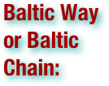

The Baltic Way or Baltic Chain was a peaceful political demonstration that occurred on August 23, 1989. Approximately two million people joined their hands to form a human chain spanning over 600 kilometers (370 mi) across the three Baltic states – Estonian SSR, Latvian SSR, and Lithuanian SSR, republics of the Soviet Union. It marked the 50th anniversary of the Molotov–Ribbentrop Pact between the Soviet Union and Nazi Germany. The pact and its secret protocols divided Eastern Europe into spheres of influence and led to the occupation of the Baltic states in 1940. The event was organized by Baltic pro-independence movements: Rahvarinne of Estonia, Popular Front of Latvia, and Sąjūdis of Lithuania. The protest was designed to draw global attention by demonstrating a popular desire for independence for each of the entities. It also illustrated solidarity among the three nations. It has been described as an effective publicity campaign, and an emotionally captivating and visually stunning scene. The event presented an opportunity for the Baltic activists to publicize the illegal Soviet occupation and position the question of Baltic independence not as a political matter, but as a moral issue. Soviet authorities in Moscow responded to the event with intense rhetoric, but failed to take any constructive actions that could bridge the widening gap between the Baltic states and the Soviet Union. Within six months from the protest, Lithuania became the first of the Republics of the Soviet Union to declare independence. (wikipedia.org. Accessed on September 1, 2011.)

The Barricades were events that took place between 13 and 27 January 1991 in Latvia. Latvia, which had declared independence from the Soviet Union a year earlier, anticipated that Soviet Union might attempt to violently regain control over the country. After attacks of pro-Soviet OMON of Riga in early January the government called on people to build barricades for protection of possible targets (mainly in the capital city of Riga and nearby Ulbroka, as well as Kuldīga and Liepāja). At least 7 people were killed in further attacks, and a total of 15,611 people have registered themselves as participants of the Barricades. (wikipedia.org. Accessed on September 1, 2011.)

The Bay of Pigs Invasion was an unsuccessful action by a CIA-trained force of Cuban exiles to invade southern Cuba, with support and encouragement from the US government, in an attempt to overthrow the Cuban government of Fidel Castro. The invasion was launched in April 1961, less than three months after John F. Kennedy assumed the presidency in the United States. The Cuban armed forces, trained and equipped by Eastern Bloc nations, defeated the invading combatants within three days. The main invasion landing took place at a beach named Playa Girón, located at the mouth of the bay. The invasion is named after the Bay of Pigs, although that is only a modern translation of the Spanish Bahía de Cochinos. In Latin America, the conflict is often known as La Batalla de Girón, or just Playa Girón. (wikipedia.org. Accessed on September 1, 2011.)

The Berlin Blockade (24 June 1948 – 12 May 1949) was one of the first major international crises of the Cold War and the first resulting in casualties. During the multinational occupation of post-World War II Germany, the Soviet Union blocked the Western Allies' railway and road access to the sectors of Berlin under Allied control. Their aim was to force the western powers to allow the Soviet zone to start supplying Berlin with food and fuel, thereby giving the Soviets practical control over the entire city. In response, the Western Allies organized the Berlin Airlift to carry supplies to the people in West Berlin. The United Kingdom's Royal Air Force and the recently independent United States Air Force flew over 200,000 flights in one year, providing up to 4700 tons of daily necessities such as fuel and food to the Berliners. Alongside British and US personnel the airlift involved aircrews from the Royal Australian Air Force, Royal Canadian Air Force, Royal New Zealand Air Force and South African Air Force. By the spring of 1949, the effort was clearly succeeding and, by April, the airlift was delivering more cargo than had previously been transported into the city by rail. The success of the Berlin Airlift brought humiliation to the Soviets who had refused to believe it could make a difference. The blockade was lifted in May 1949 and resulted in the creation of two separate German states. The Federal Republic of Germany (West Germany) and the German Democratic Republic (East Germany) split up Berlin. In remembrance of the airlift, three airports in the former western zones of the city served as the primary gateways to Germany for another fifty years. (wikipedia.org. Accessed on September 1, 2011.)

The Berlin Crisis of 1961 (4 June – 9 November 1961) was the last major politico-military European incident of the Cold War about the occupational status of the German capital city, Berlin, and of post–World War II Germany. The U.S.S.R. provoked the Berlin Crisis with an ultimatum demanding the withdrawal of Western armed forces from West Berlin — culminating with the city's de facto partition with the East German erection of the Berlin Wall. The 22nd Congress of the Communist Party of the Soviet Union — the last to be attended by the Communist Party of China — was held in Moscow during the crisis. (wikipedia.org. Accessed on September 1, 2011.)

The Berlin Wall was a barrier constructed by the German Democratic Republic (GDR, East Germany) starting on 13 August 1961, that completely cut off West Berlin from surrounding East Germany and from East Berlin. The barrier included guard towers placed along large concrete walls, which circumscribed a wide area (later known as the "death strip") that contained anti-vehicle trenches, "fakir beds" and other defenses. The Soviet-dominated Eastern Bloc officially claimed that the wall was erected to protect its population from fascist elements conspiring to prevent the "will of the people" in building a socialist state in East Germany. However, in practice, the Wall served to prevent the massive emigration and defection that marked Germany and the communist Eastern Bloc during the post-World War II period. The Berlin Wall was officially referred to as the "Anti-Fascist Protection Rampart" (German: Antifaschistischer Schutzwall) by GDR authorities, implying that neighboring West Germany had not been fully de-Nazified. The West Berlin city government sometimes referred to it as the "Wall of Shame"—a term coined by mayor Willy Brandt—while condemning the Wall's restriction on freedom of movement. Along with the separate and much longer Inner German border (IGB) that demarcated the border between East and West Germany, both borders came to symbolize the "Iron Curtain" that separated Western Europe and the Eastern Bloc during the Cold War. Before the Wall's erection, 3.5 million East Germans circumvented Eastern Bloc emigration restrictions and defected from the GDR, many by crossing over the border from East Berlin into West Berlin, from where they could then travel to West Germany and other Western European countries. Between 1961 and 1989, the wall prevented almost all such emigration. During this period, around 5,000 people attempted to escape over the wall, with estimates of the resulting death toll varying between 100 and 200. In 1989, a radical series of political changes occurred in the Eastern Bloc, associated with the liberalization of the Eastern Bloc's authoritarian systems and the erosion of political power in the pro-Soviet governments in nearby Poland and Hungary. After several weeks of civil unrest, the East German government announced on 9 November 1989 that all GDR citizens could visit West Germany and West Berlin. Crowds of East Germans crossed and climbed onto the wall, joined by West Germans on the other side in a celebratory atmosphere. Over the next few weeks, a euphoric public and souvenir hunters chipped away parts of the wall; the governments later used industrial equipment to remove most of the rest. The fall of the Berlin Wall paved the way for German reunification, which was formally concluded on 3 October 1990. (wikipedia.org. Accessed on September 1, 2011.)

Human capital flight, more commonly referred to as "brain drain", is the large-scale emigration of a large group of individuals with technical skills or knowledge. The reasons usually include two aspects which respectively come from countries and individuals. In terms of countries, the reasons may be social environment (in source countries: lack of opportunities, political instability, economic depression, health risks; in host countries: rich opportunities, political stability and freedom, developed economy, better living conditions). In terms of individual reasons, there are family influence (overseas relatives), and personal preference: preference for exploring, ambition for an improved career, etc. Although the term originally referred to technology workers leaving a nation, the meaning has broadened into: "the departure of educated or professional people from one country, economic sector, or field for another, usually for better pay or living conditions". Brain drain is usually regarded as an economic cost, since emigrants usually take with them the fraction of value of their training sponsored by the government or other organizations. It is a parallel of capital flight, which refers to the same movement of financial capital. Brain drain is often associated with deskilling of emigrants in their country of destination, while their country of emigration experiences the draining of skilled individuals. . . Brain drain is common amongst developing nations, such as the former colonies of Africa, the island nations of the Caribbean, and particularly in centralized economies such as former East Germany and the Soviet Union, where marketable skills were not financially rewarded. (wikipedia.org. Accessed on September 1, 2011.)

The Brezhnev Doctrine was a Soviet Union foreign policy, first and most clearly outlined by S. Kovalev in a September 26, 1968 Pravda article, entitled “Sovereignty and the International Obligations of Socialist Countries.” Leonid Brezhnev reiterated it in a speech at the Fifth Congress of the Polish United Workers' Party on November 13, 1968, which stated: "When forces that are hostile to socialism try to turn the development of some socialist country towards capitalism, it becomes not only a problem of the country concerned, but a common problem and concern of all socialist countries." This doctrine was announced to retroactively justify the Soviet invasion of Czechoslovakia in August 1968 that ended the Prague Spring, along with earlier Soviet military interventions, such as the invasion of Hungary in 1956. These interventions were meant to put an end to democratic liberalization efforts and uprisings that had the potential to compromise Soviet hegemony inside the Eastern bloc, which was considered by the Soviets to be an essential defensive and strategic buffer in case hostilities with NATO were to break out. In practice, the policy meant that limited independence of communist parties was allowed. However, no country would be allowed to leave the Warsaw Pact, disturb a nation's communist party's monopoly on power, or in any way compromise the cohesiveness of the Eastern bloc. Implicit in this doctrine was that the leadership of the Soviet Union reserved, for itself, the right to define "socialism" and "capitalism". Following the announcement of the Brezhnev Doctrine, numerous treaties were signed between the Soviet Union and its satellite states to reassert these points and to further ensure inter-state cooperation. The principles of the doctrine were so broad that the Soviets even used it to justify their military intervention in the non-Warsaw Pact nation of Afghanistan in 1979. The Brezhnev Doctrine stayed in effect until it was finally ended with the Soviet non-invasion of Poland during the 1980-1981 crisis and later refusal of Mikhail Gorbachev to use military force when Poland held free elections in 1989 and Solidarity defeated the Communist Party. It was superseded by the facetiously named Sinatra Doctrine in 1989. (wikipedia.org. Accessed on September 1, 2011.)

The Carnation Revolution, also referred to as the 25 de Abril (the 25th of April), was a military coup started on 25 April 1974, in Lisbon, Portugal, coupled with an unanticipated and extensive campaign of civil resistance. The name "Carnation Revolution" comes from the fact no shots were fired and when the population started descending the streets to celebrate the end of the war in the colonies carnations flowers were put on the guns ends and on the uniforms. These events effectively changed the Portuguese regime from an authoritarian dictatorship (the Estado Novo) into a democracy, and produced enormous social, economic, territorial, demographic and political changes in the country, after two years of a transitional period known as PREC (Processo Revolucionário Em Curso, or On-Going Revolutionary Process), characterized by social turmoil and power disputes between left- and right-wing political forces. . . Although the regime's political police, PIDE, killed four people before surrendering, the revolution was unusual in that the revolutionaries did not use direct violence to achieve their goals. Holding red carnations (cravos in Portuguese), many people joined revolutionary soldiers on the streets of Lisbon, in apparent joy and audible euphoria. Red is a symbolic color for socialism and communism, which were the main ideological tendencies of many anti-New State insurgents. It was the end of the Estado Novo, the longest authoritarian regime in Western Europe, and the final dissolution of the Portuguese Empire. In the aftermath of the revolution a new constitution was drafted, censorship was formally prohibited, free speech declared, political prisoners were released and the Portuguese overseas territories in Sub-Saharan Africa were immediately given their independence as communist states. East Timor was also offered independence, being invaded by neighboring Indonesia afterwards. (wikipedia.org. Accessed on September 1, 2011.)

Central Committee was the common designation of a standing administrative body of communist parties, analogous to a board of directors, whether ruling or non-ruling in the twentieth century and of the surviving, mostly Stalinist, states in the early twenty first. In such party organizations the committee would typically be made up of delegates elected at a party congress. In those states where it constituted the state power, the Central Committee made decisions for the party between congresses, and usually was responsible for electing the Politburo. In non-ruling Communist parties, the Central Committee is usually understood by the party membership to be the ultimate decision-making authority between Congresses once the process of democratic centralism has led to an agreed-upon position. (wikipedia.org. Accessed on September 1, 2011.)

The Central Intelligence Agency (CIA) is a central intelligence agency of the United States government, reporting to the Director of National Intelligence, responsible for providing national security intelligence assessment to senior United States policymakers. The CIA also engages in covert activities at the request of the President of the United States. It is the successor of the Office of Strategic Services (OSS) formed during World War II to coordinate espionage activities against the Axis Powers for the branches of the United States Armed Forces. The National Security Act of 1947 established the CIA, affording it "no police or law enforcement functions, either at home or abroad". One year later, this mandate was expanded to include "sabotage, anti-sabotage, demolition and evacuation measures...subversion [and] assistance to underground resistance movements, guerrillas and refugee liberation movements, and support of indigenous anti-communist elements in threatened countries of the free world". . . These locations are called "lily pads" by the Air Force. The primary function of the CIA is to collect information about foreign governments, corporations, and individuals, and to advise public policymakers. The agency conducts covert operations and paramilitary actions, and exerts foreign political influence through its Special Activities Division. . . The CIA's headquarters is in Langley in McLean, unincorporated Fairfax County, Virginia, a few miles west of Washington, D.C. along the Potomac River. Sometimes, the CIA is referred to euphemistically in government and military parlance as Other Government Agencies (OGA), particularly when its operations in a particular area are an open secret. Other terms include The Company, Langley and The Agency. (wikipedia.org. Accessed on September 1, 2011.)
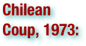

The 1973 Chilean coup d'état was a watershed event of the Cold War and the history of Chile. On Tuesday 11 September 1973, the democratically elected President Salvador Allende was overthrown in a coup d’état organized by the Chilean military and endorsed by the United States. A military junta led by General Augusto Pinochet took control of the government, composed of the heads of the Air Force, Navy, Carabineros (police force) and the Army . Pinochet later assumed power and ended Allende's democratically elected Popular Unity government. During the air raids and ground attacks that preceded the coup, Allende gave his last speech, in which he vowed to stay in the presidential palace. Direct witness accounts of his death agree that he committed suicide in the palace. After the coup, Pinochet established a military dictatorship that ruled Chile until 1990; it was marked by severe human rights violations. A weak insurgent movement against the Pinochet government was maintained inside Chile by elements sympathetic to the former Allende government. (wikipedia.org. Accessed on September 1, 2011.)

The Chinese Civil War (1927-1949/1950) was a civil war fought between the Kuomintang (KMT or Chinese Nationalist Party), the governing party of the Republic of China, and the Communist Party of China (CPC), for the control of China which eventually led to China's division into two Chinas, Republic of China (currently known as Taiwan) and People's Republic of China (Mainland China). The war began in April 1927, amidst the Northern Expedition. The war represented an ideological split between the Nationalist KMT, and the Communist CPC. In mainland China today, the last three years of the war (1947–1949) are more commonly known as the War of Liberation. In Taiwan, the war was also known as the Counter-insurgency War against Communists before 1991. The civil war continued intermittently until the Second Sino-Japanese War interrupted it, resulting in the two parties forming a Second United Front. Japan's campaign was defeated in 1945, marking the end of World War II, and China's full-scale civil war resumed in 1946. After a further four years, 1950 saw a cessation of major military hostilities—with the newly founded People's Republic of China controlling mainland China (including Hainan Island), and the Republic of China's jurisdiction being restricted to Taiwan, Penghu, Kinmen, Matsu and several outlying islands. To this day, since no armistice or peace treaty has ever been signed, there is controversy as to whether the Civil War has legally ended. Today, the entities on the two sides of the Taiwan strait have close economic ties. (wikipedia.org. Accessed on September 1, 2011.)

The Cold War was the continuing state from roughly 1946 to 1991 of political conflict, military tension, proxy wars, and economic competition between the Communist World – primarily the Soviet Union and its satellite states and allies – and the powers of the Western world, primarily the United States and its allies. Although the chief military forces never engaged in a major battle with each other, they expressed the conflict through military coalitions, strategic conventional force deployments, extensive aid to states deemed vulnerable, proxy wars, espionage, propaganda, conventional and nuclear arms races, appeals to neutral nations, rivalry at sports events, and technological competitions such as the Space Race. After the success of their temporary wartime alliance against Nazi Germany, the USSR and the US saw each other as profound enemies of their basic ways of life. The Soviet Union created the Eastern Bloc with the eastern European countries it occupied, annexing some and maintaining others as satellite states, some of which were later consolidated as the Warsaw Pact (1955–1991). The US financed the recovery of western Europe and forged NATO, a military alliance using containment of communism as a main strategy (Truman Doctrine). The US funded the Marshall Plan to effectuate a more rapid post-War recovery of Europe, while the Soviet Union would not let most Eastern Bloc members participate. Elsewhere, in Latin America and Southeast Asia, the USSR assisted and helped foster communist revolutions, opposed by several Western countries and their regional allies; some they attempted to roll back, with mixed results. Among the countries that the USSR supported in pro-communist revolt was Cuba, led by Fidel Castro. The proximity of communist Cuba to the United States proved to be a center-point of the Cold War; the USSR placed multiple nuclear missiles in Cuba, sparking heated tension with the Americans and leading to the Cuban Missile Crisis of 1962, where full-scale nuclear war threatened. Some countries aligned with NATO and the Warsaw Pact, and others formed the Non-Aligned Movement. The Cold War featured periods of relative calm and of international high tension – the Berlin Blockade (1948–1949), the Korean War (1950–1953), the Berlin Crisis of 1961, the Vietnam War (1959–1975), the Cuban Missile Crisis (1962), the Soviet war in Afghanistan (1979–1989), and the Able Archer 83 NATO exercises in November 1983. Both sides sought détente to relieve political tensions and deter direct military attack, which would probably guarantee their mutual assured destruction with nuclear weapons. In the 1980s, under the Reagan Doctrine, the United States increased diplomatic, military, and economic pressures on the Soviet Union, at a time when the nation was already suffering economic stagnation. In the late 1980s, Soviet President Mikhail Gorbachev introduced the liberalizing reforms of perestroika ("reconstruction", "reorganization", 1987) and glasnost ("openness", ca. 1985). The Cold War ended after the Soviet Union collapsed in 1991, leaving the United States as the dominant military power. The Cold War and its events have had a significant impact on the world today, and it is often referred to in popular culture, especially films and novels about spies. (wikipedia.org. Accessed on September 1, 2011.)

Founded in 1947, Cominform (Communist Information Bureau) is the common name for what was officially referred to as the Information Bureau of the Communist and Workers' Parties. It was the first official forum of the international communist movement since the dissolution of the Comintern, and confirmed the new realities after World War II – including the creation of an Eastern Bloc. Cominform was a Soviet-dominated organization of Communist parties founded in September 1947 at a conference of Communist party leaders in Szklarska Poręba, Poland. Soviet leader Joseph Stalin called the conference in response to divergences among eastern European governments on whether or not to attend the Paris Conference on Marshall Aid in July 1947. The initial seat of Cominform was located in Belgrade (then the capital of the Federative People's Republic of Yugoslavia). After the expulsion of Yugoslavia from the group in June 1948, the seat was moved to Bucharest, Romania. The expulsion of the Communist Party of Yugoslavia from Cominform for Titoism initiated the Informbiro period in that country's history. The intended purpose of Cominform was to coordinate actions between Communist parties under Soviet direction. It had its own newspaper (titled For Lasting Peace, for People's Democracy!), and it encouraged unity of Communist parties. Cominform was dissolved in 1956 after Soviet rapprochement with Yugoslavia and the process of De-Stalinization. (wikipedia.org. Accessed on September 1, 2011.)


Communism is a sociopolitical movement that aims for a classless and stateless society structured upon common ownership of the means of production, free access to articles of consumption, and the end of wage labour and private property in the means of production and real estate. (wikipedia.org. Accessed on September 1, 2011.)
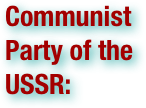

The Communist Party of the Soviet Union was the only legal, ruling political party in the Soviet Union and one of the largest communist organizations in the world. It lost its dominance in the wake of the failed August 1991 coup d'état attempt led by authoritarian hardliners. It emerged from the Bolshevik faction of the Russian Social Democratic Labour Party, under the leadership of Vladimir Lenin. The party led the 1917 October Revolution that overthrew the Russian Provisional Government and established the world's first socialist state. Given the central role under the Constitution of the Soviet Union, the party controlled all tiers of government in the Soviet Union and tolerated no opposition. Its organization was subdivided into communist parties of the constituent Soviet republics as well as the mass youth organization, Komsomol. The party was also the driving force of the Third International (Comintern). The party ceased to exist after the coup d'état attempt in 1991 and was succeeded by the Communist Party of the Russian Federation in Russia and the communist parties of the now-independent former Soviet republics. (wikipedia.org. Accessed on September 1, 2011.)

A communist revolution is a proletarian revolution inspired by the ideas of Marxism that aims to replace capitalism with communism, typically with socialism as an intermediate stage. The idea that a proletarian revolution is needed is a cornerstone of Marxism; Marxists believe that the workers of the world must unite and free themselves from capitalist oppression to create a world run by and for the working class. Thus, in the Marxist view, proletarian revolutions need to happen in countries all over the world; see world revolution. Leninism argues that a communist revolution must be led by a vanguard of 'professional revolutionaries'—that is, men and women who are fully dedicated to the communist cause and who can then form the nucleus of the revolutionary movement. Some Marxists disagree with the idea of a vanguard as put forth by Lenin, especially left communists but also including some who continue to consider themselves Marxist-Leninists despite such a disagreement. These critics insist that the entire working class - or at least a large part of it - must be deeply involved and equally committed to the socialist or communist cause in order for a proletarian revolution to be successful. To this end, they seek to build massive communist parties with very large memberships. (wikipedia.org. Accessed on September 1, 2011.)

Containment was a United States policy using military, economic, and diplomatic strategies to stall the spread of communism, enhance America’s security and influence abroad, and prevent a "domino effect". A component of the Cold War, this policy was a response to a series of moves by the Soviet Union to enlarge communist influence in Eastern Europe, China, Korea, and Vietnam. It represented a middle-ground position between détente and rollback. The basis of the doctrine was articulated in a 1946 cable by U.S. diplomat George F. Kennan. As a description of U.S. foreign policy, the word originated in a report Kennan submitted to Defense Secretary James Forrestal in 1947, a report that was later dominated as a magazine article. It is a translation of the French cordon sanitaire, used to describe Western policy toward the Soviet Union in the 1920s. The word containment is associated most strongly with the policies of U.S. President Harry Truman (1945–53), including the establishment of the North Atlantic Treaty Organization (NATO), a mutual defense pact. Although President Dwight Eisenhower (1953–61) toyed with the rival doctrine of rollback, he refused to intervene in the Hungarian Uprising of 1956. President Lyndon Johnson (1963–69) was firmly committed to containment, forcing him to fight a war he did not want in Vietnam. President Richard Nixon (1969–74), working with his top advisor Henry Kissinger, rejected containment in favor of friendly relations with the Soviet Union and China; this détente, or relaxation of tensions, involved expanded trade and cultural contacts. President Jimmy Carter (1976–81) emphasized human rights rather than anti-communism, but dropped détente and returned to containment when the Soviets invaded Afghanistan in 1979. President Ronald Reagan (1981–89), denouncing the Soviet state as an "evil empire", escalated the Cold War and promoted rollback in Nicaragua and Afghanistan. Central programs begun under containment, including NATO and nuclear deterrence, remained in effect even after the end of the Cold War in 1989 and the breakup of the Soviet Union in 1991. (wikipedia.org. Accessed on September 1, 2011.)
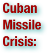

The Cuban Missile Crisis (known as the October Crisis in Cuba or Caribbean Crisis) was a confrontation among the Soviet Union, Cuba and the United States in October 1962, during the Cold War. In August 1962, after some unsuccessful operations by the US to overthrow the Cuban regime (Bay of Pigs, Operation Mongoose), the Cuban and Soviet governments secretly began to build bases in Cuba for a number of medium-range and intermediate-range ballistic nuclear missiles (MRBMs and IRBMs) with the ability to strike most of the continental United States. This action followed the 1958 deployment of Thor IRBMs in the UK (Project Emily) and Jupiter IRBMs to Italy and Turkey in 1961 – more than 100 US-built missiles having the capability to strike Moscow with nuclear warheads. On October 14, 1962, a United States Air Force U-2 plane on a photo reconnaissance mission captured photographic proof of Soviet missile bases under construction in Cuba. The ensuing crisis ranks with the Berlin Blockade, the Suez Crisis and the Yom Kippur War as one of the major confrontations of the Cold War and is generally regarded as the moment in which the Cold War came closest to turning into a nuclear conflict. It also marks the first documented instance of the threat of mutual assured destruction (MAD) being discussed as a determining factor in a major international arms agreement. The United States considered attacking Cuba via air and sea, and settled on a military "quarantine" of Cuba. The US announced that it would not permit offensive weapons to be delivered to Cuba and demanded that the Soviets dismantle the missile bases already under construction or completed in Cuba and remove all offensive weapons. The Kennedy administration held only a slim hope that the Kremlin would agree to their demands, and expected a military confrontation. On the Soviet side, Premier Nikita Khrushchev wrote in a letter to Kennedy that his quarantine of "navigation in international waters and air space" constituted "an act of aggression propelling humankind into the abyss of a world nuclear-missile war". The Soviets publicly balked at the US demands, but in secret back-channel communications initiated a proposal to resolve the crisis. The confrontation ended on October 28, 1962, when President John F. Kennedy and United Nations Secretary-General U Thant reached a public and secret agreement with Khrushchev. Publicly, the Soviets would dismantle their offensive weapons in Cuba and return them to the Soviet Union, subject to United Nations verification, in exchange for a US public declaration and agreement never to invade Cuba. Secretly, the US agreed that it would dismantle all US-built Thor and Jupiter IRBMs deployed in Europe and Turkey. Only two weeks after the agreement, the Soviets had removed the missile systems and their support equipment, loading them onto eight Soviet ships from November 5–9. A month later, on December 5 and 6, the Soviet Il-28 bombers were loaded onto three Soviet ships and shipped back to Russia. The quarantine was formally ended at 6:45 pm EDT on November 20, 1962. Eleven months after the agreement, all American weapons were deactivated (by September 1963). An additional outcome of the negotiations was the creation of the Hotline Agreement and the Moscow–Washington hotline, a direct communications link between Moscow and Washington, D.C. (wikipedia.org. Accessed on September 1, 2011.)

The Cuban Project (also known as Operation Mongoose or the Special Group Augmented) was a program of Central Intelligence Agency (CIA) covert operations developed during the early years of the administration of President of the United States John F. Kennedy. On November 30, 1961 aggressive covert operations against the communist government of Fidel Castro in Cuba were authorized by President Kennedy. The operation was led by Air Force General Edward Lansdale and went into effect after the failed Bay of Pigs invasion. Operation Mongoose was a secret program of propaganda, psychological warfare, and sabotage against Cuba to remove the communists from power; which was a prime focus of the Kennedy administration, according to Harvard historian Jorge Domínguez. A document from the US Department of State confirms that the project aimed to "help Cuba overthrow the Communist regime", including its leader Fidel Castro, and it aimed "for a revolt which can take place in Cuba by October 1962". US policy makers also wanted to see "a new government with which the United States can live in peace". (wikipedia.org. Accessed on September 1, 2011.)

The Cuban Revolution was a successful armed revolt by Fidel Castro's 26th of July Movement, which overthrew the US-backed Cuban dictator Fulgencio Batista on 1 January 1959, after over five years of struggle. (wikipedia.org. Accessed on September 1, 2011.)

De-Stalinization refers to the process of eliminating the cult of personality, Stalinist political system and the Gulag labour-camp system created by Soviet leader Joseph Stalin. Stalin was succeeded by a collective leadership after his death in March 1953. . . De-Stalinization spelled an end to the role of large-scale forced labor in the economy. . . Khrushchev then emerged as the most powerful Soviet politician. At a speech On the Personality Cult and its Consequences to the closed session of the Twentieth Party Congress of the CPSU, February 25, 1956, Khrushchev shocked his listeners by denouncing Stalin's dictatorial rule and cult of personality. (wikipedia.org. Accessed on September 1, 2011.)

Détente (French for 'relaxation') is the easing of strained relations, especially in a political situation. The term is often used in reference to the general easing of relations between the Soviet Union and the United States in the 1970s, a thawing at a period roughly in the middle of the Cold War. . . The period was characterized by the signing of treaties such as the SALT I, SALT II, and the Helsinki Agreement. There is some debate amongst historians as to how successful the détente period was in achieving peace. It did, however, mark the first time in the Cold War period that the US and the USSR worked together to lessen international tensions, caused primarily by Mutual Assured Destruction. The first Strategic Arms Limitation Talks (SALT) treaty, agreed for both countries to halt the production of nuclear weapons and missiles. It was the first step towards solving one of the most vital issues that was disabling any kind of relationship between the USSR and the US. The two superpowers also agreed to install a direct hotline between Washington DC and Moscow, the so called red telephone, enabling both countries to quickly interact with each other in a time of urgency. The SALT II pact of the late 70s continued the work of the SALT I talks, ensuring further reduction in arms by the Soviets and by the US. The Helsinki Accords, in which the Soviets promised to grant free elections in Europe, has been seen as a major concession to ensure peace by the Soviets. Détente ended after the Soviet's invasion of Afghanistan, which led to America's boycott of the 1980 Olympics in Moscow. Ronald Reagan's election as president in 1980, based on an anti-détente campaign, marked the close of Détente and a return to Cold War hostilities. (wikipedia.org. Accessed on September 1, 2011.)


Deterrence theory gained increased prominence as a military strategy during the Cold War with regard to the use of nuclear weapons, and features prominently in current United States foreign policy regarding the development of nuclear technology in North Korea and Iran. . . It can therefore be summarized that the use of the power to hurt as bargaining power is the foundation of deterrence theory, and is most successful when it is held in reserve. (wikipedia.org. Accessed on September 1, 2011.)

The dissolution of the Soviet Union was the disintegration of the federal political structures and central government of the Union of Soviet Socialist Republics (USSR), resulting in the independence of all fifteen republics of the Soviet Union between March 11, 1990 and December 25, 1991. The direct cause of the dissolution was the failed attempt by Mikhail Gorbachev, the leader of the USSR from March 11, 1985, to revitalize the Soviet economy through a process of limited political liberalization (glasnost/perestroika) within the confines of a totalitarian communist one-party state. The broader result of the dissolution was the fall of Communism as a global ideology between 1989 and 1991 and the end of the Cold War. Multi-ethnic communist federal states proved particularly vulnerable to disintegration during this time – the Soviet Union was but one example of three such states that collapsed in Europe as a result of the fall of communism, the others being the Socialist Republic of Yugoslavia, which broke up in a series of wars in 1991–1992, and Czechoslovak Socialist Republic, which had its peaceful velvet divorce in 1993. (wikipedia.org. Accessed on September 1, 2011.)

The domino theory was a theory during the 1950s to 1980s, promoted at times by the government of the United States, that speculated that if one state in a region came under the influence of communism, then the surrounding countries would follow in a domino effect. The domino theory was used by successive United States administrations during the Cold War to clarify the need for American intervention around the world. Referring to communism in Indochina, U.S. President Dwight D. Eisenhower put the theory into words during an April 7, 1954 news conference: "Finally, you have broader considerations that might follow what you would call the "falling domino" principle. You have a row of dominoes set up, you knock over the first one, and what will happen to the last one is the certainty that it will go over very quickly. So you could have a beginning of a disintegration that would have the most profound influences." (wikipedia.org. Accessed on September 1, 2011.)

The Eastern Bloc refers to the former communist states of Eastern and Central Europe, especially the Soviet Union and its satellites in the Warsaw Pact. . . The terms Communist Bloc and Soviet Bloc are also used to denote the regimes aligned with the former Soviet Union, although these terms may be used to imply the inclusion of regimes in the Soviet sphere of influence outside Central and Eastern Europe. Authoritarian communist governments were initially installed in a bloc politics process that included extensive political and media controls, along with the Soviet approach to restricting emigration. Events such as the Tito-Stalin split and Berlin Blockade prompted stricter control from Moscow. While the Bloc persisted through revolts including the Hungarian Revolution of 1956 and the aftermath of the Warsaw Pact invasion of Czechoslovakia, its command economies experienced inefficiency and stagnation preceding the Bloc's dissolution. (wikipedia.org. Accessed on September 1, 2011.)

Eastern Bloc emigration and defection was a point of controversy during the Cold War. After World War II, emigration restrictions were imposed by countries in the Eastern Bloc, which consisted of the Soviet Union and its satellite states in Eastern and Central Europe. Legal emigration was in most cases only possible in order to reunite families or to allow members of minority ethnic groups to return to their homelands. Eastern Bloc governments argued that strict limits to emigration were necessary to prevent a brain drain. The United States and Western European governments argued that they represented a violation of human rights. Despite the restrictions, defections to the West occurred. After East Germany tightened its zonal occupation border with West Germany, the city sector border between East Berlin and West Berlin became a loophole through which defection could occur. This was closed with the erection of the Berlin Wall in 1961. Thereafter, emigration from the Eastern Bloc was effectively limited to illegal defections, ethnic emigration under bilateral agreements, and a small number of other cases. (wikipedia.org. Accessed on September 1, 2011.)

The economy of the Union of Soviet Socialist Republics (USSR) was based on a system of state ownership of the means of production, collective farming, industrial manufacturing and centralized administrative planning. The economy was characterized by state control of investment, public ownership of industrial assets, and during the last 20 years of its existence, pervasive corruption and socioeconomic stagnation. After Mikhail Gorbachev came to power, continuing economic liberalization moved the economy towards a market-oriented socialist economy. All of these factors contributed to the final dissolution of the Soviet Union in 1991. The stagnation which would consume the last years of the Soviet Union was caused by poor governance under Leonid Brezhnev and inefficiencies within the planned economy. When the stagnation began is a matter of debate, but is normally placed either in the 1960s or early 1970s. From 1928 to 1991 the entire course of the economy was guided by a series of Five-Year Plans. Within 40 years, the nation evolved from a mainly agrarian society and became one of the world's three top manufacturers of a large number of capital goods, heavy industrial products and weaponry. However, the USSR lagged far behind in the output of light industrial production and consumer durables, mostly because of the inability of Gosplan, the economic planning committee, to predict the demand for such products. The complex demands of the modern economy and inflexible administration overwhelmed and constrained the central planners. Corruption and data fiddling became common practice among the bureaucracy by reporting fulfilled targets and quotas, thus entrenching the crisis. Nonetheless, from the Stalin-era to the early Brezhnev-era, the Soviet economy grew as fast as the Japanese economy and faster than that of the United States. (wikipedia.org. Accessed on September 1, 2011.)
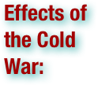

Following the Cold War, Russia cut military spending dramatically, but the adjustment was wrenching, as the military-industrial sector had previously employed one of every five Soviet adults and its dismantling left hundreds of millions throughout the former Soviet Union unemployed. After Russia embarked on capitalist economic reforms in the 1990s, it suffered a financial crisis and a recession more severe than the US and Germany had experienced during the Great Depression. Russian living standards have worsened overall in the post–Cold War years, although the economy has resumed growth since 1999. The legacy of the Cold War continues to influence world affairs. After the dissolution of the Soviet Union, the post–Cold War world is widely considered as unipolar, with the United States the sole remaining superpower. The Cold War defined the political role of the United States in the post–World War II world: by 1989 the US held military alliances with 50 countries, and had 1.5 million troops posted abroad in 117 countries. The Cold War also institutionalized a global commitment to huge, permanent peacetime military-industrial complexes and large-scale military funding of science. Military expenditures by the US during the Cold War years were estimated to have been $8 trillion, while nearly 100,000 Americans lost their lives in the Korean War and Vietnam War. Although the loss of life among Soviet soldiers is difficult to estimate, as a share of their gross national product the financial cost for the Soviet Union was far higher than that of the US. In addition to the loss of life by uniformed soldiers, millions died in the superpowers' proxy wars around the globe, most notably in Southeast Asia. Most of the proxy wars and subsidies for local conflicts ended along with the Cold War; the incidence of interstate wars, ethnic wars, revolutionary wars, as well as refugee and displaced persons crises has declined sharply in the post–Cold War years. The legacy of Cold War conflict, however, is not always easily erased, as many of the economic and social tensions that were exploited to fuel Cold War competition in parts of the Third World remain acute. The breakdown of state control in a number of areas formerly ruled by Communist governments has produced new civil and ethnic conflicts, particularly in the former Yugoslavia. In Eastern Europe, the end of the Cold War has ushered in an era of economic growth and a large increase in the number of liberal democracies, while in other parts of the world, such as Afghanistan, independence was accompanied by state failure. (wikipedia.org. Accessed on September 1, 2011.)

The Era of Stagnation, also known as Brezhnev stagnation or the Stagnation Period, refers to a period of economic stagnation under the rules of Leonid Brezhnev, Yuri Andropov and Konstantin Chernenko in the history of the Soviet Union which started in the mid-1970s. . . The beginning of this stagnation was marked with the Sinyavsky–Daniel trial and suppression of the Prague Spring; these are the most known events which indicated that neither discussion nor serious reforms (even within the traditional Soviet paradigm) would be allowed during that period. During that period, any serious critics of communism, communist leaders, Soviet literature, or even typical Soviet events were qualified as anti-Soviet propaganda. . . Stagnation was characterized by suppression of both growth in the economy and any social life of the country, as well as repression of dissidents. (wikipedia.org. Accessed on September 1, 2011.)

The phrase evil empire was applied especially to the Soviet Union and its "empire" by U.S. President Ronald Reagan, who took an aggressive, hard-line stance that favored matching and exceeding the Soviet Union's strategic and global military capabilities, in calling for a rollback strategy that would, in his words, write the final pages of the history of the Soviet Union. The characterization demeaned the Soviet Union and angered Soviet leaders; it represented the rhetorical side of the escalation of the Cold War. (wikipedia.org. Accessed on September 1, 2011.)

The Force de Frappe (French for strike force) is the designation of what used to be a triad of air-, sea- and land-based nuclear weapons intended for dissuasion, i.e. deterrence. The French Nuclear Force, part of the Armed Forces of France, is the third largest nuclear-weapons force in the world, following the nuclear triads of the Russian Federation and the United States. (wikipedia.org. Accessed on September 1, 2011.)

General Secretary of the Central Committee of the Communist Party of the Soviet Union was the title given to the leader of the Communist Party of the Soviet Union. With some exceptions, the office was synonymous with leader of the Soviet Union. Throughout its history the office had four other names; Technical Secretary (1917–1918), Chairman of the Secretariat (1918–1919), Responsible Secretary (1919–1922) and First Secretary (1953–1964). Joseph Stalin elevated the office to overall command of the Communist Party and by definition the whole Soviet Union. In its first two incarnations the office performed mostly secretarial work. The post of Responsible Secretary was then established in 1919 to perform administrative work. In 1922 the office of General Secretary followed as a purely administrative and disciplinary position, whose role was to do no more than determine party membership composition. Stalin, its first incumbent, used the principles of democratic centralism to transform his office into that of party leader, and later leader of the Soviet Union. (wikipedia.org. Accessed on September 1, 2011.)

German reunification was the process in 1990 in which the German Democratic Republic (GDR/East Germany) joined the Federal Republic of Germany (FRG/West Germany), and when Berlin reunited into a single city, as provided by its then Grundgesetz constitution Article 23. The start of this process is commonly referred by Germans as die Wende (The Turning Point). The end of the unification process is officially referred to as German unity, celebrated on 3 October (German Unity Day). The East German regime started to falter in May 1989, when the removal of Hungary's border fence opened a hole in the Iron Curtain. It caused an exodus of thousands of East Germans fleeing to West Germany and Austria via Hungary. The Peaceful Revolution, a series of protests by East Germans, led to the GDR's first free elections on 18 March 1990, and to the negotiations between the GDR and FRG that culminated in a Unification Treaty, whilst negotiations between the GDR and FRG and the four occupying powers produced the so-called "Two Plus Four Treaty" (Treaty on the Final Settlement with Respect to Germany) granting full sovereignty to a unified German state, whose two halves had previously still been bound by a number of limitations stemming from their post-WWII status as occupied regions. The united Germany remained a member of the European Community (later the European Union) and of NATO. (wikipedia.org. Accessed on September 1, 2011.)

Glasnost (Openness) was the policy of maximal publicity, openness, and transparency in the activities of all government institutions in the Soviet Union, together with freedom of information, introduced by Mikhail Gorbachev in the second half of the 1980s. The word "glasnost" is used in Russian at least since the end of the 18th century. The word was frequently used by Gorbachev to specify the policies he believed might help reduce the corruption at the top of the Communist Party and the Soviet government, and moderate the abuse of administrative power in the Central Committee. Russian human rights activist and dissident Lyudmila Alexeyeva explained glasnost as a word that "had been in the Russian language for centuries. It was in the dictionaries and law books as long as there had been dictionaries and law books. It was an ordinary, hardworking, nondescript word that was used to refer to a process, any process of justice of governance, being conducted in the open." Glasnost can also refer to the specific period in the history of the USSR during the 1980s when there was less censorship and greater freedom of information. (wikipedia.org. Accessed on September 1, 2011.)

In politics, hardline refers to the doctrine, policy, and posturing of a government or political body as being absolutist and sometimes authoritarian. The hardline position is usually extremist and uncompromising. The term "hardliner" can be synonymous with the term "hawk" and is often used as a derogation. It can be used to refer to individuals within a political, special interest, or activist movement of almost any ideology. (wikipedia.org. Accessed on September 1, 2011.)

The Helsinki Final Act, Helsinki Accords or Helsinki Declaration was the final act of the Conference on Security and Co-operation in Europe held in Helsinki, Finland, during July and August 1,1975. Thirty-five states, including the USA, Canada, and all European states except Albania and Andorra, signed the declaration in an attempt to improve relations between the Communist bloc and the West. (wikipedia.org. Accessed on September 1, 2011.)
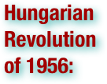

The Hungarian Revolution of 1956 was a spontaneous nationwide revolt against the government of the People's Republic of Hungary and its Soviet-imposed policies, lasting from 23 October until 10 November 1956. The revolt began as a student demonstration which attracted thousands as it marched through central Budapest to the Parliament building. A student delegation entering the radio building in an attempt to broadcast its demands was detained. When the delegation's release was demanded by the demonstrators outside, they were fired upon by the State Security Police (ÁVH) from within the building. The news spread quickly and disorder and violence erupted throughout the capital. The revolt spread quickly across Hungary, and the government fell. Thousands organized into militias, battling the State Security Police (ÁVH) and Soviet troops. Pro-Soviet communists and ÁVH members were often executed or imprisoned, as former prisoners were released and armed. Impromptu councils wrested municipal control from the ruling Hungarian Working People's Party and demanded political changes. The new government formally disbanded the ÁVH, declared its intention to withdraw from the Warsaw Pact and pledged to re-establish free elections. By the end of October, fighting had almost stopped and a sense of normality began to return. After announcing a willingness to negotiate a withdrawal of Soviet forces, the Politburo changed its mind and moved to crush the revolution. On 4 November, a large Soviet force invaded Budapest and other regions of the country. Hungarian resistance continued until 10 November. Over 2,500 Hungarians and 700 Soviet troops were killed in the conflict, and 200,000 Hungarians fled as refugees. Mass arrests and denunciations continued for months thereafter. By January 1957, the new Soviet-installed government had suppressed all public opposition. These Soviet actions alienated many Western Marxists, yet strengthened Soviet control over Central Europe. Public discussion about this revolution was suppressed in Hungary for over 30 years, but since the thaw of the 1980s it has been a subject of intense study and debate. At the inauguration of the Third Hungarian Republic in 1989, October 23 was declared a national holiday. (wikipedia.org. Accessed on September 1, 2011.)

An intercontinental ballistic missile (ICBM) is a ballistic missile with a long range (greater than 5,500 km or 3,500 miles) typically designed for nuclear weapons delivery (delivering one or more nuclear warheads). Due to their great range and firepower, in an all-out nuclear war, land-based and submarine-based ballistic missiles would carry most of the destructive force, with nuclear-armed bombers having the remainder. ICBMs are differentiated by having greater range and speed than other ballistic missiles: intermediate-range ballistic missiles (IRBMs), medium-range ballistic missiles (MRBMs), short-range ballistic missiles (SRBMs)—these shorter range ballistic missiles are known collectively as theater ballistic missiles. There is no single, standardized definition of what ranges would be categorized as intercontinental, intermediate, medium, or short. With the advent of multiple independently targetable reentry vehicles (MIRVs) in 1970, deployed in Minuteman ICBMs and Poseidon SLBMs, a single missile had the capability of carrying several warheads, each of which could strike a different target. While the warheads of theater ballistic missiles are often conventional, ICBMs have been nearly inseparable from their connection with nuclear warheads. 'Nuclear ICBM' was seen as a redundant term. Strategic planning avoided the concept of a conventionally tipped ICBM, mainly because any ICBM launch threatens many countries and they are expected to react under the worst-case assumption that it is a nuclear attack. This threat of ICBMs to deliver such a lethal blow so rapidly to targets across the globe means that there has never been any end-to-end test of a nuclear-armed ICBM. The speed and range of an ICBM means that it is the only means by which military action can be taken promptly anywhere in the world, though the United States Prompt Global Strike effort is designed to allow for similar flexibility with conventional weapons. (wikipedia.org. Accessed on September 1, 2011.)

The Intermediate-Range Nuclear Forces Treaty (INF) is a 1987 agreement between the United States and the Soviet Union. Signed in Washington, D.C. by U.S. President Ronald Reagan and General Secretary Mikhail Gorbachev on December 8, 1987, it was ratified by the United States Senate on May 27, 1988 and came into force on June 1 of that year. . . The treaty eliminated nuclear and conventional ground-launched ballistic and cruise missiles with intermediate ranges, defined as between 500-5,500 km (300-3,400 miles). (wikipedia.org. Accessed on September 1, 2011.)
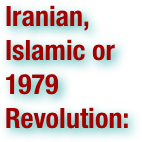

The Iranian Revolution refers to events involving the overthrow of Iran's monarchy (Pahlavi dynasty) under Shah Mohammad Reza Pahlavi and its replacement with an Islamic republic under Ayatollah Ruhollah Khomeini, the leader of the revolution. Demonstrations against the Shah commenced in October 1977, developing into a campaign of civil resistance that was partly secular and partly religious, and intensified in January 1978. Between August and December 1978 strikes and demonstrations paralyzed the country. The Shah left Iran for exile in mid-January 1979, and in the resulting power vacuum two weeks later Ayatollah Khomeini returned to Tehran to a greeting by several million Iranians. The royal regime collapsed shortly after on February 11 when guerrillas and rebel troops overwhelmed troops loyal to the Shah in armed street fighting. Iran voted by national referendum to become an Islamic Republic on April 1, 1979, and to approve a new theocratic constitution whereby Khomeini became Supreme Leader of the country, in December 1979. The revolution was unusual for the surprise it created throughout the world: it lacked many of the customary causes of revolution (defeat at war, a financial crisis, peasant rebellion, or disgruntled military); produced profound change at great speed; was massively popular; overthrew a puppet regime of the United States, which was heavily protected by a lavishly financed army and security services; and replaced a modernizing monarchy with a theocracy based on Guardianship of the Islamic Jurists. Its outcome – an Islamic Republic "under the guidance of an extraordinary religious scholar from Qom" – was, as one scholar put it, "clearly an occurrence that had to be explained". (wikipedia.org. Accessed on September 1, 2011.)


The concept of the Iron Curtain symbolized the ideological fighting and physical boundary dividing Europe into two separate areas from the end of World War II in 1945 until the end of the Cold War in 1989. On either side of the Iron Curtain, states developed their own international economic and military alliances: 1) The Council for Mutual Economic Assistance and the military Warsaw Pact on the east side, with the Soviet Union as most important member of each, and, 2) The European Community and the North Atlantic Treaty Organization on the west and south. Physically, the Iron Curtain took the shape of border defenses between the countries of Western and Eastern Europe, most notably the Berlin Wall, which served as a longtime symbol of the Curtain as a whole. The events that demolished the Iron Curtain started in Poland, and continued in Hungary, East Germany, Bulgaria, Czechoslovakia and Romania. Romania was the only Eastern bloc country to violently overthrow its communist regime. (wikipedia.org. Accessed on September 1, 2011.)
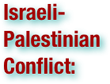

The Israeli–Palestinian conflict is the ongoing conflict between Israelis and Palestinians. The conflict is wide-ranging, and the term is also used in reference to the earlier phases of the same conflict, between Jewish and Zionist yishuv and the Arab population living in Palestine under Ottoman or British rule. It forms part of the wider Arab–Israeli conflict. The remaining key issues are: mutual recognition, borders, security, water rights, control of Jerusalem, Israeli settlements, Palestinian freedom of movement and legalities concerning refugees. The violence resulting from the conflict has prompted international actions, as well as other security and human rights concerns, both within and between both sides, and internationally. In addition, the violence has curbed expansion of tourism in the region, which is full of historic and religious sites that are of interest to many people around the world. (wikipedia.org. Accessed on September 1, 2011.)

The KGB is the commonly used initials for the Russian Committee for State Security. It was the national security agency of the Soviet Union from 1954 until 1991, and its premier internal security, intelligence, and secret police organization during that time. The contemporary State Security Agency of the Republic of Belarus uses the Russian name KGB. Most of the KGB archives remain classified, yet two on-line documentary sources are available. (wikipedia.org. Accessed on September 1, 2011.)

Korean Air Lines Flight 007 was a Korean Air Lines civilian airliner that was shot down by Soviet interceptors on 1 September 1983, over the Sea of Japan, near Moneron Island just west of Sakhalin island. All 269 passengers and crew aboard were killed, including Lawrence McDonald, a sitting member of the United States Congress. The aircraft was en route from New York City to Seoul via Anchorage when it strayed into prohibited Soviet airspace around the time of a planned missile test. The Soviet Union initially denied knowledge of the incident, but later admitted shooting the aircraft down, claiming that it was on a spy mission. The Politburo said it was a deliberate provocation by the United States, to test the Soviet Union's military preparedness, or even to provoke a war. The United States accused the Soviet Union of obstructing search and rescue operations. The Soviet military suppressed evidence sought by the International Civil Aviation Organization (ICAO) investigation, notably the flight data recorders, which were eventually released eight years later after the collapse of the Soviet Union. The incident was one of the tensest moments of the Cold War, and resulted in an escalation of anti-Soviet sentiment, particularly in the United States. The opposing points of view on the incident were never fully resolved; consequently, several groups continue to dispute official reports and offer alternative theories of the event. The subsequent release of KAL 007 flight transcripts and flight recorders by the Russian Federation has addressed some details. As a result of the incident, the United States altered tracking procedures for aircraft departing Alaska, while the interface of the autopilot used on airliners was redesigned to make it more ergonomic. President Ronald Reagan ordered the U.S. military to make the developing Global Positioning System (GPS) available for civilian use so that navigational errors like that of KAL 007 could be averted in the future. (wikipedia.org. Accessed on September 1, 2011.)

The Korean War (25 June 1950 – armistice signed 27 July 1953) was a conventional war between South Korea, supported by the United Nations, and North Korea, supported by the People's Republic of China (PRC), with military material aid from the Soviet Union. The war was a result of the physical division of Korea by an agreement of the victorious Allies at the conclusion of the Pacific War at the end of World War II. The Korean peninsula was ruled by Japan from 1910 until the end of World War II. Following the surrender of Japan in 1945, American administrators divided the peninsula along the 38th Parallel, with United States troops occupying the southern part and Soviet troops occupying the northern part. The failure to hold free elections throughout the Korean Peninsula in 1948 deepened the division between the two sides, and the North established a Communist government. The 38th Parallel increasingly became a political border between the two Koreas. Although reunification negotiations continued in the months preceding the war, tension intensified. Cross-border skirmishes and raids at the 38th Parallel persisted. The situation escalated into open warfare when North Korean forces invaded South Korea on 25 June 1950. It was the first significant armed conflict of the Cold War. The United Nations, particularly the United States, came to the aid of South Korea in repelling the invasion, but within two months the defenders were pushed back to the Pusan perimeter, a small area in the south of the country, before the North Koreans were stopped. A rapid UN counter-offensive then drove the North Koreans past the 38th Parallel and almost to the Yalu River, and the People's Republic of China (PRC) entered the war on the side of the North. The Chinese launched a counter-offensive that pushed the United Nations forces back across the 38th Parallel. The Soviet Union materially aided the North Korean and Chinese armies. In 1953, the war ceased with an armistice that restored the border between the Koreas near the 38th Parallel and created the Korean Demilitarized Zone (DMZ), a 2.5-mile (4.0 km) wide buffer zone between the two Koreas. Minor outbreaks of fighting continue to the present day. With both North and South Korea sponsored by external powers, the Korean War was a proxy war. From a military science perspective, it combined strategies and tactics of World War I and World War II: it began with a mobile campaign of swift infantry attacks followed by air bombing raids, but became a static trench war by July 1951. (wikipedia.org. Accessed on September 1, 2011.)
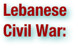

The Lebanese Civil War was a multifaceted civil war in Lebanon. The war lasted from 1975 to 1990 and resulted in an estimated 150,000 to 230,000 civilian fatalities. Another one million people (a quarter of the population) were wounded, and today approximately 350,000 people remain displaced. There was also a mass exodus of almost one million people from Lebanon. The Post-war occupation of the country by Syria was particularly politically disadvantageous to the Christian population as most of their leadership was driven into exile, or had been assassinated or jailed. (wikipedia.org. Accessed on September 1, 2011.)

Liberal democracy, also known as constitutional democracy, is a common form of representative democracy. According to the principles of liberal democracy, elections should be free and fair, and the political process should be competitive. Political pluralism is usually defined as the presence of multiple and distinct political parties. (wikipedia.org. Accessed on September 1, 2011.)

Mutual Assured Destruction is a doctrine of military strategy and national security policy in which a full-scale use of high-yield weapons of mass destruction by two opposing sides would effectively result in the complete, utter and irrevocable annihilation of both the attacker and the defender, becoming thus a war that has no victory nor any armistice but only effective reciprocal destruction. It is based on the theory of deterrence according to which the deployment, and implicit menace of use, of strong weapons is essential to threaten the enemy in order to prevent the use by said-enemy of the same weapons against oneself. The strategy is effectively a form of Nash equilibrium in which neither side, once armed, has any incentive to disarm thereafter. (wikipedia.org. Accessed on September 1, 2011.)


The Malta Summit consisted of a meeting between U.S. President George H. W. Bush and U.S.S.R. leader Mikhail Gorbachev, taking place between December 2-3 1989, just a few weeks after the fall of the Berlin Wall. It was their second meeting following a meeting that included then President Ronald Reagan, in New York in December 1988. During the summit, Bush and Gorbachev would declare an end to the Cold War, although whether it was truly such is a matter of debate. News reports of the time referred to the Malta Summit as the most important since 1945, when British Prime Minister Winston Churchill, Soviet premier Joseph Stalin and U.S. President Franklin D. Roosevelt agreed on a post-war plan for Europe at Yalta. (wikipedia.org. Accessed on September 1, 2011.)

The Marshall Plan (officially the European Recovery Program, ERP) was the large-scale American program to aid Europe where the United States gave monetary support to help rebuild European economies after the end of World War II in order to combat the spread of Soviet communism. The plan was in operation for four years beginning in April 1948. The goals of the United States were to rebuild a war-devastated region, remove trade barriers, modernize industry, and make Europe prosperous again. The initiative was named after Secretary of State George Marshall. The plan had bipartisan support in Washington, where the Republicans controlled Congress and the Democrats controlled the White House. The Plan was largely the creation of State Department officials, especially William L. Clayton and George F. Kennan. Marshall spoke of urgent need to help the European recovery in his address at Harvard University in June 1947. The reconstruction plan, developed at a meeting of the participating European states, was established on June 5, 1947. It offered the same aid to the Soviet Union and its allies, but they did not accept it. During the four years that the plan was operational, US $13 billion in economic and technical assistance was given to help the recovery of the European countries that had joined in the Organization for European Economic Co-operation. This $13 billion was in the context of a U.S. GDP of $258 billion in 1948, and was on top of $12 billion in American aid to Europe between the end of the war and the start of the Plan that is counted separately from the Marshall Plan. The Marshall Plan was replaced by the Mutual Security Plan at the end of 1951. The ERP addressed each of the obstacles to postwar recovery. The plan looked to the future, and did not focus on the destruction caused by the war. Much more important were efforts to modernize European industrial and business practices using high-efficiency American models, reduce artificial trade barriers, and instill a sense of hope and self-reliance. By 1952 as the funding ended, the economy of every participant state had surpassed pre-war levels; for all Marshall Plan recipients, output in 1951 was at least 35% higher than in 1938. Over the next two decades, Western Europe enjoyed unprecedented growth and prosperity, but economists are not sure what proportion was due directly to the ERP, what proportion indirectly, and how much would have happened without it. The Marshall Plan was one of the first elements of European integration, as it erased trade barriers and set up institutions to coordinate the economy on a continental level—that is, it stimulated the total political reconstruction of western Europe. Belgian economic historian Herman Van der Wee concludes the Marshall Plan was a "great success": "It gave a new impetus to reconstruction in Western Europe and made a decisive contribution to the renewal of the transport system, the modernization of industrial and agricultural equipment, the resumption of normal production, the raising of productivity, and the facilitating of intra-European trade." (wikipedia.org. Accessed on September 1, 2011.)

Martial law in Poland refers to the period of time from December 13, 1981 to July 22, 1983, when the authoritarian government of the People's Republic of Poland drastically restricted normal life by introducing martial law in an attempt to crush political opposition to it. Thousands of opposition activists were interned without charge and as many as 100 people were killed. Although martial law was lifted in 1983, many of the political prisoners were not released until the general amnesty in 1986. (wikipedia.org. Accessed on September 1, 2011.)

Marxism–Leninism is a communist ideology that is officially based upon the theories of Marxism and Vladimir Lenin, that promotes the development and creation of international communist society through the leadership of a vanguard party over a revolutionary socialist state that represents the will and rule of the proletariat. It supports the creation of a totalitarian single party state. It rejects political pluralism external to communism, claiming that the proletariat need a single, able political party to represent them and exercise political leadership. The Marxist-Leninist state forbids opposition to itself and its ideology. Through the policy of democratic centralism, the communist party is the supreme political institution of the Marxist-Leninist state. (wikipedia.org. Accessed on September 1, 2011.)

Military–industrial complex (MIC), or Military–industrial-congressional complex (MICC) is a concept commonly used to refer to policy and monetary relationships between legislators, national armed forces, and the industrial sector that supports them. These relationships include political contributions, political approval for defense spending, lobbying to support bureaucracies, and beneficial legislation and oversight of the industry. It is a type of iron triangle. The term is most often played in reference to the military of the United States, where it gained popularity after its use in the farewell address of President Dwight D. Eisenhower, though the term is applicable to any country with a similarly developed infrastructure. (wikipedia.org. Accessed on September 1, 2011.)

The Molotov Plan was the system created by the Soviet Union in 1947 in order to provide aid to rebuild the countries in Eastern Europe that were politically and economically aligned to the Soviet Union. It can be seen to be the USSR's version of the Marshall Plan, which for political reasons the Eastern European countries would not be able to join without leaving the Soviet sphere of influence. Soviet foreign minister Vyacheslav Molotov rejected the Marshall Plan (1947), proposing the Molotov Plan — the Soviet-sponsored economic grouping which was eventually expanded to become the COMECON. The plan was a system of bilateral trade agreements which also established COMECON to create an economic alliance of socialist countries. This aid allowed countries in Europe to stop relying on American aid, and therefore allowed Molotov Plan states to reorganize their trade to the USSR instead. (wikipedia.org. Accessed on September 1, 2011.)

The North Atlantic Treaty Organization or NATO, also called the (North) Atlantic Alliance, is an intergovernmental military alliance based on the North Atlantic Treaty which was signed on 4 April 1949. The NATO headquarters are in Brussels, Belgium, and the organization constitutes a system of collective defense whereby its member states agree to mutual defense in response to an attack by any external party. For its first few years, NATO was not much more than a political association. However, the Korean War galvanized the member states, and an integrated military structure was built up under the direction of two U.S. supreme commanders. The first NATO Secretary General, Lord Ismay, famously stated the organization's goal was "to keep the Russians out, the Americans in, and the Germans down". Doubts over the strength of the relationship between the European states and the United States ebbed and flowed, along with doubts over the credibility of the NATO defense against a prospective Soviet invasion—doubts that led to the development of the independent French nuclear deterrent and the withdrawal of the French from NATO's military structure in 1966. (wikipedia.org. Accessed on September 1, 2011.)

The Nicaraguan Revolution (Spanish: Revolución Nicaragüense or Revolución Popular Sandinista, also RPS) encompasses the rising opposition to the Somoza dictatorship in the 1960s and 1970s, the campaign led by the Sandinista National Liberation Front (Frente Sandinista de Liberación Nacional, FSLN) which led to the violent ousting of that dictatorship in 1979, and the subsequent efforts of the FSLN, which governed from 1979 until 1990, to reform the society and economy of the country along somewhat socialist lines. The revolution played a substantial role in foreign policy for Nicaragua, Central America and the Americas. The revolutionary conflict also marked one of the proxy wars in the Cold War. (wikipedia.org. Accessed on September 1, 2011.)

The New Look was the name given to the national security policy of the United States during the administration of President Dwight D. Eisenhower. It reflected Eisenhower's concern for balancing the Cold War military commitments of the United States with the nation's financial resources and emphasized reliance on strategic nuclear weapons to deter potential threats, both conventional and nuclear, from the Eastern Bloc of nations headed by the Soviet Union. (wikipedia.org. Accessed on September 1, 2011.)

U.S. President Richard Nixon's 1972 visit to the People's Republic of China was an important step in formally normalizing relations between the United States and the People's Republic of China. It marked the first time a U.S. president had visited the PRC, who at that time considered the U.S. one of its staunchest foes. The visit has become a metaphor for an unexpected or uncharacteristic action by a politician. (wikipedia.org. Accessed on September 1, 2011.)

The nomenklatura were a category of people within the Soviet Union and other Eastern Bloc countries who held various key administrative positions in all spheres of those countries' activity: government, industry, agriculture, education, etc., whose positions were granted only with approval by the communist party of each country or region. Virtually all were members of the Communist Party. Some authors who opposed the Soviet regime, such as Milovan Đilas, critically defined them as a new class. (wikipedia.org. Accessed on September 1, 2011.)

North American Aerospace Defense Command is a joint organization of Canada and the United States that provides aerospace warning, air sovereignty, and defense for the two countries. Headquarters NORAD is located at Peterson AFB, Colorado Springs, Colorado. NORAD command and control is exercised through the Cheyenne Mountain Operations Center, located a short distance away. . . The growing perception of the threat of long-range Soviet strategic bombers armed with nuclear weapons brought the U.S. and Canada into closer cooperation for air defense. While attacks from the Pacific or Atlantic would have been detected by Airborne Early Warning aircraft, Navy ships, or offshore radar platforms, the Arctic was under-protected. In the early 1950s the U.S. and Canada agreed to construct a series of radar stations across North America to detect a Soviet attack over the Arctic. . . The systems gave around three hours' warning of a bomber attack before they could reach any major population center. The command and control of the massive system then became a significant challenge. Discussions and studies of joint systems had been ongoing since the early 1950s and culminated on August 1, 1957, with the announcement by the U.S. and Canada to establish an integrated command, the North American Air Defense Command. On September 12, operations commenced in Colorado. A formal NORAD agreement between the two governments was signed on May 12, 1958. (wikipedia.org. Accessed on September 1, 2011.)


A nuclear weapon is an explosive device that derives its destructive force from nuclear reactions, either fission or a combination of fission and fusion. Both reactions release vast quantities of energy from relatively small amounts of matter. The first fission ("atomic") bomb test released the same amount of energy as approximately 20,000 tons of TNT. The first thermonuclear ("hydrogen") bomb test released the same amount of energy as approximately 10,000,000 tons of TNT. A modern thermonuclear weapon weighing little more than 2,400 pounds (1,100 kg) can produce an explosive force comparable to the detonation of more than 1.2 million tons (1.1 million metric tons) of TNT. Thus, even a small nuclear device no larger than traditional bombs can devastate an entire city by blast, fire and radiation. Nuclear weapons are considered weapons of mass destruction, and their use and control has been a major focus of international relations policy since their debut. (wikipedia.org. Accessed on September 1, 2011.)


The 1980s oil glut was a serious surplus of crude oil caused by falling demand following the 1970s Energy Crisis. The world price of oil, which had peaked in 1980 at over US$35 per barrel, fell in 1986 from $27 to below $10 . . . After 1980, reduced demand and overproduction produced a glut on the world market, causing a six-year-long decline in oil prices culminating with a 46 percent price drop in 1986. (wikipedia.org. Accessed on September 1, 2011.)

Operation Condor was a campaign of political repression involving assassination and intelligence operations officially implemented in 1975 by the right-wing dictatorships of the Southern Cone of South America. The program aimed to eradicate alleged socialist and communist influence and ideas and to control active or potential opposition movements against the participating governments. Due to its clandestine nature, the precise number of deaths directly attributable to Operation Condor is highly disputed. It is estimated that a minimum of 60,000 deaths can be attributed to Condor, possibly more. Condor's key members were the governments in Argentina, Chile, Uruguay, Paraguay, Bolivia and Brazil. The United States participated in a supervisory capacity, with Ecuador and Peru joining later in more peripheral roles. (wikipedia.org. Accessed on September 1, 2011.)

Neue Ostpolitik (German for "new eastern policy"), or Ostpolitik for short, refers to the normalization of relations between the Federal Republic of Germany (FRG, or West Germany) and Eastern Europe, particularly the German Democratic Republic (GDR, or East Germany) beginning in 1969. Influenced by Egon Bahr, who proposed "change through rapprochement" in a 1963 speech, the policies were implemented beginning with Willy Brandt, fourth Chancellor of the FRG from 1969 to 1974. Ostpolitik was an effort to break with the policies of the Christian Democratic Union (CDU), which was the elected government of West Germany from 1949 until 1969. The Christian Democrats under Konrad Adenauer and his successors tried to combat the Communist regime of East Germany, while Brandt's Social Democrats tried to achieve a certain degree of cooperation with East Germany. The term Ostpolitik has since been applied to Pope Paul VI's efforts to engage Eastern European countries during the same period. The term Nordpolitik was also coined to describe similar rapprochement policies between North and South Korea beginning in the 1980s. (wikipedia.org. Accessed on September 1, 2011.)

Perestroika (literally: Restructuring) was a political movement within the Communist Party of the Soviet Union during 1980s, widely associated with the Soviet leader Mikhail Gorbachev. Its literal meaning is "restructuring", referring to the restructuring of the Soviet political and economic system. Perestroika is often argued to be a cause of the dissolution of the Soviet Union, the revolutions of 1989 in Eastern Europe, and the end of the Cold War. (wikipedia.org. Accessed on September 1, 2011.)

Unipolarity in international politics is a distribution of power in which there is one state with most of the cultural, economic, and military influence. This is different from hegemony since a hegemon may not have total control of the sea ports or "commons". . . Bipolarity is a distribution of power in which two states have the majority of economic, military, and cultural influence internationally or regionally. Often, spheres of influence would develop. For example, in the Cold War, most Western and democratic states would fall under the influence of the USA, while most Communist states would fall under the influence of the USSR. After this, the two powers will normally maneuver for the support of the unclaimed areas. . . Multipolarity is a distribution of power in which more than two nation-states have nearly equal amounts of military, cultural, and economic influence. (wikipedia.org. Accessed on September 1, 2011.)

The Prague Spring was a period of political liberalization in Czechoslovakia during the era of its domination by the Soviet Union after World War II. It began on 5 January 1968, when reformist Slovak Alexander Dubček came to power, and continued until 21 August when the Soviet Union and members of the Warsaw Pact invaded the country to halt the reforms. The Prague Spring reforms were an attempt by Dubček to grant additional rights to the citizens in an act of partial decentralization of the economy and democratization. The freedoms granted included a loosening of restrictions on the media, speech and travel. After national discussion of dividing the country into a federation of three republics, Bohemia, Moravia-Silesia and Slovakia, Dubček oversaw the decision to split into two, the Czech Republic and Slovak Republic. This was the only change that survived the end of the Prague Spring. The reforms, especially the decentralization of administrative authority, were not received well by the Soviets, who, after failed negotiations, sent thousands of Warsaw Pact troops and tanks to occupy the country. A large wave of emigration swept the nation. While there were many non-violent protests in the country, including the protest-suicide of a student, there was no military resistance. Czechoslovakia remained occupied until 1990. After the invasion, Czechoslovakia entered a period of normalization: subsequent leaders attempted to restore the political and economic values that had prevailed before Dubček gained control of the Communist Party of Czechoslovakia (KSČ). Gustáv Husák, who replaced Dubček and also became president, reversed almost all of Dubček's reforms. The Prague Spring inspired music and literature such as the work of Václav Havel, Karel Husa, Karel Kryl, and Milan Kundera's novel The Unbearable Lightness of Being. (wikipedia.org. Accessed on September 1, 2011.)


A proxy war or proxy warfare is a war that results when opposing powers use third parties as substitutes for fighting each other directly. While powers have sometimes used governments as proxies, violent non-state actors, mercenaries, or other third parties are more often employed. It is hoped that these groups can strike an opponent without leading to full-scale war. Proxy wars have also been fought alongside full-scale conflicts. It is almost impossible to have a pure proxy war, as the groups fighting for a certain nation usually have their own interests, which can diverge from those of their patron. Typically proxy wars function best during cold wars, as they become a necessity in conducting armed conflict between at least two belligerents while continuing cold warfare. (wikipedia.org. Accessed on September 1, 2011.)

The Reagan Doctrine was a strategy orchestrated and implemented by the United States under the Reagan Administration to oppose the global influence of the Soviet Union during the final years of the Cold War. While the doctrine lasted less than a decade, it was the centerpiece of United States foreign policy from the early 1980s until the end of the Cold War in 1991. Under the Reagan Doctrine, the U.S. provided overt and covert aid to anti-communist guerrillas and resistance movements in an effort to "roll back" Soviet-backed communist governments in Africa, Asia, and Latin America. The doctrine was designed to serve the dual purposes of diminishing Soviet influence in these regions, while also potentially opening the door for capitalism (and sometimes liberal democracy) in nations that were largely being governed by Soviet-supported socialist governments. (wikipedia.org. Accessed on September 1, 2011.)

The Republics of the Soviet Union or the Union Republics of the Soviet Union were ethnically-based administrative units that were subordinated directly to the Government of the Soviet Union. The Soviet Union was historically a highly centralized state; the decentralization and democratization reforms during the era of Perestroika and Glasnost conducted by Mikhail Gorbachev led to the Dissolution of the USSR. (wikipedia.org. Accessed on September 1, 2011.)

The Revolutions of 1989 (also known as the Fall of Communism, the Collapse of Communism, the Revolutions of Eastern Europe and the Autumn of Nations) were the revolutions which overthrew the communist regimes in European countries. The events began in Poland in 1989, and continued in Hungary, East Germany, Bulgaria, Czechoslovakia and Romania. One feature common to most of these developments was the extensive use of campaigns of civil resistance demonstrating popular opposition to the continuation of one-party rule and contributing to the pressure for change. Romania was the only Eastern Bloc country to overthrow its Communist regime violently. The Tienanmen Square protests of 1989 failed to stimulate major political changes in China. However, powerful images of courageous defiance during that protest helped to spark a precipitation of events in other parts of the globe. Among the famous anti-Communist revolutions was the fall of the Berlin Wall, which served as the symbolic gateway to German reunification in 1990. The Soviet Union was dissolved by the end of 1991, resulting in Russia and 14 nations declaring their independence from the Soviet Union: Armenia, Azerbaijan, Belarus, Estonia, Georgia, Kazakhstan, Kyrgyzstan, Latvia, Lithuania, Moldova, Tajikistan, Turkmenistan, Ukraine and Uzbekistan. Communism was abandoned in Albania and Yugoslavia between 1990 and 1992, the latter splitting into five successor states by 1992: Slovenia, Croatia, Republic of Macedonia, Bosnia and Herzegovina, and Federal Republic of Yugoslavia (comprising Serbia, Montenegro and Kosovo). The impact was felt in dozens of Socialist countries. Communism was abandoned in countries such as Cambodia, Ethiopia, and Mongolia and South Yemen. The collapse of Communism led commentators to declare the end of the Cold War. The adoption of varying forms of market economy generally resulted at first in decreasing living standards in post-Communist States, together with side effects including the rise of business oligarchs in countries such as Russia, and disproportional social and economic development. Political reforms were varied; in many countries Communist institutions were able to keep themselves in power, such as the People's Republic of China, while for other states various emerging political parties succeeded. Many Communist and Socialist organizations in the West turned their guiding principles over to social democracy. The European political landscape was drastically changed, with numerous Eastern Bloc countries joining NATO and stronger European economic and social integration entailed. (wikipedia.org. Accessed on September 1, 2011.)

The Southeast Asia Treaty Organization (SEATO) was an international organization for collective defense in Southeast Asia created by the Southeast Asia Collective Defense Treaty, or Manila Pact, signed in September 1954 in Manila. The formal institution of SEATO was established on 19 February 1955 at a meeting of treaty partners in Bangkok, Thailand. The organization's headquarters were also located in Bangkok. Primarily created to block further communist gains in Southeast Asia, SEATO is generally considered a failure because internal conflict and dispute hindered general use of the SEATO military; however, SEATO-funded cultural and educational programs left long-standing effects in Southeast Asia. SEATO was dissolved on 30 June 1977 after multiple members lost interest and withdrew. (wikipedia.org. Accessed on September 1, 2011.)

The term show trial is a pejorative description of a type of highly public trial in which there is a strong connotation that the judicial authorities have already determined the guilt of the defendant. The actual trial has as its only goal to present the accusation and the verdict to the public as an impressive example and as a warning. Show trials tend to be retributive rather than correctional justice. The term was first recorded in the 1930s. Such trials can exhibit scant regard for the principles of jurisprudence and even for the letter of the law. Defendants have little real opportunity to justify themselves: they have often signed statements under duress and/or suffered torture prior to appearing in the court-room. (wikipedia.org. Accessed on September 1, 2011.)

The Reykjavik Summit was a summit meeting between U.S. president Ronald Reagan and Secretary-General of the Communist Party of the Soviet Union Mikhail Gorbachev, held in the famous house of Höfði in Reykjavik, the capital city of Iceland, on October 11–12, 1986. The talks collapsed at the last minute, but the progress that had been achieved eventually resulted in the 1987 Intermediate-Range Nuclear Forces Treaty between the United States and the Soviet Union. (wikipedia.org. Accessed on September 1, 2011.)

In political science, rollback is the strategy of forcing change in the major policies of a state, usually by replacing its ruling regime. It contrasts with containment, which means preventing the expansion of that state; and with détente, which means a working relationship with that state. Most of the discussions of rollback in the scholarly literature deal with United States foreign policy toward Communist countries during the Cold War. The rollback strategy was tried, and failed, in Korea in 1950, and in Cuba in 1961. The political leadership of the United States discussed the use of rollback during the uprising of 1953 in East Germany and the Hungarian Revolution of 1956, but decided against it to avoid the risk of Soviet intervention and a major war. When Republican Senator Barry Goldwater demanded Why Not Victory? (1962), he was defeated in a landslide in 1964 because of the risk of nuclear war with the Soviets. The rollback strategy succeeded in Grenada in 1983. Ronald Reagan promoted a rollback strategy against what he called the "evil empire" (the Soviet Union) in the 1980s. NATO has deployed a rollback strategy in Afghanistan since 2001 to end the power of the Taliban. Rollback of governments hostile to the U.S. took place in the American Civil War (1861–65), World War I (against Germany 1918), World War II (against Italy 1943, Germany 1945 and Japan 1945), 1953 Iranian coup d'état, (against Mohammad Mosaddegh), Panama (against Noriega, 1989), and Iraq (against Saddam Hussein 2003). Today rollback is sometimes called "regime change". (wikipedia.org. Accessed on September 1, 2011.)

The Strategic Arms Limitation Treaty refers to two rounds of bilateral talks and corresponding international treaties involving the United States and the Soviet Union—the Cold War superpowers—on the issue of armament control. There were two rounds of talks and agreements: SALT I and SALT II. Negotiations commenced in Helsinki, Finland, in 1969. SALT I led to the Anti-Ballistic Missile Treaty and an interim agreement between the two powers. Although SALT II resulted in an agreement in 1979, the United States chose not to ratify the treaty in response to the Soviet invasion of Afghanistan, which took place later that year. The US eventually withdrew from SALT II in 1986. The treaties then led to START (Strategic Arms Reduction Treaty), which consisted of START I (a 1991 agreement between the United States, the Soviet Union) and START II (a 1993 agreement between the United States and Russia). These placed specific caps on each side's number of nuclear weapons. (wikipedia.org. Accessed on September 1, 2011.)

A satellite state (sometimes referred to as a client state) is a political term that refers to a country that is formally independent, but under heavy political and economic influence or control by another country. The term was coined by analogy to stellar objects orbiting a larger object, such as smaller moons revolving around larger planets, and is used mainly to refer to Central and Eastern European countries of the Warsaw Pact during the Cold War or to Mongolia between 1924 and 1990, for example. As used for Central and Eastern European countries it implies that the countries in question were "satellites" under the hegemony of the Soviet Union. In some contexts it also refers to other countries in the Soviet sphere of influence during the Cold War—such as North Korea (especially in the years surrounding the Korean War) and Cuba (particularly after it joined the Comecon). In Western usage, the term has seldom been applied to states other than those in the Soviet orbit. In Soviet usage, the term was applied to the states in the orbit of Nazi Germany and Fascist Italy. In times of war or political tension, satellite states sometimes serve as a buffer between an enemy country and the nation exerting control over the satellite. "Satellite state" is one of several contentious terms used to describe the (alleged) subordination of one state to another. Other such terms include puppet state and neo-colony. In general, the term "satellite state" implies deep ideological allegiance to the hegemonic power, whereas puppet state implies political and military dependence, and neo-colony implies (often abject) economic dependence. Depending on which aspect of dependence is being emphasized, a state may fall into more than one category. (wikipedia.org. Accessed on September 1, 2011.)

The Strategic Defense Initiative (SDI) was proposed by U.S. President Ronald Reagan on March 23, 1983 to use ground and space-based systems to protect the United States from attack by strategic nuclear ballistic missiles. The initiative focused on strategic defense rather than the prior strategic offense doctrine of mutual assured destruction (MAD). The Strategic Defense Initiative Organization (SDIO) was set up in 1984 within the United States Department of Defense to oversee the Strategic Defense Initiative. The ambitious initiative was "widely criticized as being unrealistic, even unscientific" as well as for threatening to destabilize MAD and re-ignite "an offensive arms race". It was soon derided as Star Wars, after the popular 1977 film by George Lucas. In 1987, the American Physical Society concluded that a global shield such as "Star Wars" was not only impossible with existing technology, but that ten more years of research was needed to learn whether it might ever be feasible. Under the administration of President Bill Clinton in 1993, its name was changed to the Ballistic Missile Defense Organization (BMDO) and its emphasis was shifted from national missile defense to theater missile defense; and its scope from global to more regional coverage. It was never truly developed or deployed, though certain aspects of SDI research and technologies paved the way for some anti-ballistic missile systems of today. BMDO was renamed to the Missile Defense Agency in 2002. This article covers defense efforts under the SDIO. Under the SDIO's Innovative Sciences and Technology Office, headed by physicist and engineer James A. Ionson, PhD, the investment was predominantly made in basic research at national laboratories, universities, and in industry, and these programs have continued to be key sources of funding for top research scientists in the fields of high-energy physics, supercomputing/computation, advanced materials, and many other critical science and engineering disciplines: funding which indirectly supports other research work by top scientists, and which would be largely unavailable outside of the defense budget environment. (wikipedia.org. Accessed on September 1, 2011.)

The term "Second World" is a phrase used to describe the communist states within the Soviet Union's sphere of influence or those countries that had centrally-planned economies. Along with "First World" and "Third World", the term was used to divide the nations of Earth into three broad categories. In other words, the concept of "Second World" was a construct of the Cold War and the term has largely fallen out of use since the revolutions of 1989, though it is still occasionally used to describe countries that are in between poverty and prosperity, many of which are communist and former communist countries today. Subsequently, the actual meaning of the terms "First World" and "Third World" changed from being based on political ideology to an economic definition. (wikipedia.org. Accessed on September 1, 2011.)

The National Security Act of 1947 was signed by United States President Harry S. Truman on July 26, 1947, and realigned and reorganized the U.S. Armed Forces, foreign policy, and Intelligence Community apparatus in the aftermath of World War II. . . The Act merged the Department of War and the Department of the Navy into the National Military Establishment, headed by the Secretary of Defense. It was also responsible for the creation of a Department of the Air Force separate from the existing Army Air Forces. . . Aside from the military reorganization, the act established the National Security Council, a central place of coordination for national security policy in the executive branch, and the Central Intelligence Agency, the U.S.'s first peacetime intelligence agency. The function of the council was to advise the president on domestic, foreign, and military policies so that they may cooperate more tightly and efficiently. Departments in the government were encouraged to voice their opinions to the council in order to make a more sound decision. The Joint Chiefs of Staff was officially established . . . The act and its changes, along with the Truman Doctrine and the Marshall Plan, were major components of the Truman administration's Cold War strategy. (wikipedia.org. Accessed on September 1, 2011.)

The Non-Aligned Movement (NAM) is a group of states considering themselves not aligned formally with or against any major power bloc. As of 2011, the movement had 118 members and 20 observer countries. . . The organization was founded in Belgrade in 1961, and was largely the brainchild of Yugoslavia's President, Josip Broz Tito, India's first Prime Minister, Jawaharlal Nehru, Egypt's second President, Gamal Abdel Nasser, Ghana's first president Kwame Nkrumah, and Indonesia's first President, Sukarno. All five leaders were prominent advocates of a middle course for states in the Developing World between the Western and Eastern blocs in the Cold War. The phrase itself was first used to represent the doctrine by Indian diplomat and statesman V.K. Krishna Menon in 1953, at the United Nations. The purpose of the organization as stated in the Havana Declaration of 1979 is to ensure "the national independence, sovereignty, territorial integrity and security of non-aligned countries" in their "struggle against imperialism, colonialism, neo-colonialism, racism, and all forms of foreign aggression, occupation, domination, interference or hegemony as well as against great power and bloc politics." They represent nearly two-thirds of the United Nations's members and 55% of the world population, particularly countries considered to be developing or part of the Third World. (wikipedia.org. Accessed on September 1, 2011.)

"Sinatra Doctrine" was the name that the Soviet government of Mikhail Gorbachev used jokingly to describe its policy of allowing neighboring Warsaw Pact nations to determine their own internal affairs. The name alluded to the Frank Sinatra song "My Way"—the Soviet Union was allowing these nations to go their own way. This was a major break with the earlier Brezhnev Doctrine, under which the internal affairs of satellite states were tightly controlled by Moscow. This had been used to justify the invasions of Czechoslovakia in 1968 as well as of the non-Warsaw Pact nation of Afghanistan in 1979. By the late 1980s, structural flaws within the Soviet system, growing economic problems, the rise of anti-communist sentiment and the effects of the Afghan war made it increasingly impractical for the Soviet Union to impose its will on its neighbors. (wikipedia.org. Accessed on September 1, 2011.)

The Sinyavsky-Daniel trial was a trial against Russian writers Andrei Sinyavsky and Yuli Daniel, which took place in the Supreme Court of the RSFSR in Moscow between September 1965 and February 1966. This show trial is widely considered to mark the end of the period of Khruschev's liberalism and was a major starting impulse for the modern Soviet dissident movement. (wikipedia.org. Accessed on September 1, 2011.)

The Six-Day War, also known as the June War, 1967 Arab-Israeli War, or Third Arab-Israeli War, was fought between June 5 and June 10, 1967, by Israel and the neighboring states of Egypt (known at the time as the United Arab Republic), Jordan, and Syria. After a period of high tension between Israel and its neighbors, the war began on June 5 with Israel launching surprise air strikes against Arab forces. The outcome was a swift and decisive Israeli victory. Israel took effective control of the Gaza Strip and the Sinai Peninsula from Egypt, the West Bank and East Jerusalem from Jordan, and the Golan Heights from Syria. Opinions are divided on whether Israel's attack was an act of aggression or a preemptive strike of a defensive nature. (wikipedia.org. Accessed on September 1, 2011.)

Solidarity is a Polish trade union federation that emerged on August 31, 1980 at the Gdańsk Shipyard under the leadership of Lech Wałęsa. It was the first non-communist party-controlled trade union in a Warsaw Pact country. Solidarity reached 9.5 million members before its September 1981 congress that constituted 1/3 of the total working age population of Poland. In the 1980s, Solidarity was a broad anti-bureaucratic social movement, using the methods of civil resistance to advance the causes of workers' rights and social change. The government attempted to destroy the union during the period of martial law in the early 1980s and several years of political repression, but in the end it was forced to negotiate with the union. The Round Table Talks between the government and the Solidarity-led opposition led to semi-free elections in 1989. By the end of August a Solidarity-led coalition government was formed and in December 1990 Wałęsa was elected President of Poland. Since then it has become a more traditional, liberal trade union. 30 years after emerging its membership dropped to over 400,000. (wikipedia.org. Accessed on September 1, 2011.)

The Soviet Union, officially the Union of Soviet Socialist Republics (abbreviated USSR, СССР, SSSR), was a constitutionally socialist state that existed in Eurasia between 1922 and 1991. An informal name used among its residents was the Union (Soyuz). The Soviet Union had a single-party political system dominated by the Communist Party until 1990. Although the USSR was nominally a union of Soviet republics (15 in all after 1956) with the capital in Moscow, it was actually a highly centralized state with a planned economy. The Russian Revolution of 1917 brought about the downfall of the Russian Empire. Its successor, the Russian Provisional Government, was short-lived. After the Bolsheviks won the ensuing Russian Civil War, the Soviet Union was founded in December 1922 with the merger of the Russian Soviet Federative Socialist Republic, Transcaucasian Socialist Federative Soviet Republic, Ukrainian Soviet Socialist Republic and Bylorussian Soviet Socialist Republic. Following the death of the first Soviet leader, Vladimir Lenin, in 1924, Joseph Stalin eventually won a power struggle and led the country through a large-scale industrialization with a command economy and political repression. In World War II, in June 1941, Germany and its allies invaded the Soviet Union, a country with which it had signed a non-aggression pact. After four years of brutal warfare, the Soviet Union emerged victorious as one of the world's two superpowers, the other being the United States. The Soviet Union and its Eastern European satellite states engaged in the Cold War, a prolonged global ideological and political struggle against the United States and its Western Bloc allies, which it ultimately lost in the face of economic troubles and both domestic and foreign political unrest. In the late 1980s, the last Soviet leader Mikhail Gorbachev tried to reform the state with his policies of perestroika and glasnost, but the Soviet Union collapsed and was formally dissolved in December 1991 after the abortive August coup attempt. The Russian Federation assumed its rights and obligations. (wikipedia.org. Accessed on September 1, 2011.)

The Space Race was a mid-to-late twentieth century competition between the Soviet Union (USSR) and the United States (US) for supremacy in space exploration. Between 1957 and 1975, Cold War rivalry between the two nations focused on attaining firsts in space exploration, which were seen as necessary for national security and symbolic of technological and ideological superiority. The Space Race involved pioneering efforts to launch artificial satellites, sub-orbital and orbital human spaceflight around the Earth, and piloted voyages to the Moon. It effectively began with the Soviet launch of the Sputnik 1 artificial satellite on 4 October 1957, and concluded with the co-operative Apollo-Soyuz Test Project human spaceflight mission in July 1975. The Apollo-Soyuz Test Project came to symbolize détente, a partial easing of strained relations between the USSR and the US. The Space Race had its origins in the missile-based arms race that occurred just after the end of the World War II, when both the Soviet Union and the United States captured advanced German rocket technology and personnel. The Space Race sparked unprecedented increases in spending on education and pure research, which accelerated scientific advancements and led to beneficial spin-off technologies. An unforeseen effect was that the Space Race contributed to the birth of the environmental movement; the first color pictures of Earth taken from deep space were used as icons by the movement to show the planet as a fragile "blue marble" surrounded by the blackness of space. Some famous probes and missions include Sputnik 1, Explorer 1, Vostok 1, Mariner 2, Ranger 7, Luna 9, Apollo 8, and Apollo 11. (wikipedia.org. Accessed on September 1, 2011.)

The Sputnik program is the commonly known name of a group of various robotic spacecraft missions launched by the Soviet Union. The first of these, Sputnik 1, launched the first human-made object to orbit the Earth. That launch took place on October 4, 1957 as part of the International Geophysical Year and demonstrated the viability of using artificial satellites to explore the upper atmosphere. (wikipedia.org. Accessed on September 1, 2011.)


The State Protection Authority (Hungarian: Államvédelmi Hatóság or ÁVH) was the secret police force of Hungary from 1945 until 1956. It was conceived of as an external appendage of the Soviet Union's secret police forces, but attained an indigenous reputation for brutality during a series of purges beginning in 1948, intensifying in 1949 and ending in 1953. In 1953 Joseph Stalin died, and Imre Nagy (a moderate reformer) was appointed Prime Minister of Hungary. Under Nagy's first government from 1953 to 1955, the ÁVH was gradually reined in. (wikipedia.org. Accessed on September 1, 2011.)

START (for Strategic Arms Reduction Treaty) was a bilateral treaty between the United States of America and the Union of Soviet Socialist Republics (USSR) on the Reduction and Limitation of Strategic Offensive Arms. The treaty was signed on 31 July 1991 and entered into force on 5 December 1994. The treaty barred its signatories from deploying more than 6,000 nuclear warheads atop a total of 1,600 ICBMs, submarine-launched ballistic missiles, and bombers. START negotiated the largest and most complex arms control treaty in history, and its final implementation in late 2001 resulted in the removal of about 80 percent of all strategic nuclear weapons then in existence. Proposed by United States President Ronald Reagan, it was renamed START I after negotiations began on the second START treaty. The START I treaty expired 5 December 2009. On 8 April 2010, the replacement New START treaty was signed in Prague by U.S. President Obama and Russian President Medvedev. Following ratification by the U.S. Senate and the Federal Assembly of Russia, it went into force on 26 January 2011. (wikipedia.org. Accessed on September 1, 2011.)


The Suez Crisis, also referred to as the Tripartite Aggression was an offensive war fought by France, the United Kingdom, and Israel against Egypt beginning on October 29, 1956. Less than a day after Israel invaded Egypt, Britain and France issued a joint ultimatum to Egypt and Israel, and then began to bomb Cairo. In a short time, and despite Israeli and British denials, considerable evidence showed that the two attacks were planned in collusion, with France as the instigator, Britain as a belated partner, and Israel as the willing trigger. Anglo-French forces withdrew before the end of the year, but Israeli forces remained until March 1957, prolonging the crisis. In April, the canal was fully reopened to shipping, but other repercussions continued. The attack followed the President of Egypt Gamal Abdel Nasser's decision of 26 July 1956 to nationalize the Suez Canal, after the withdrawal of an offer by Britain and the United States to fund the building of the Aswan Dam, which was in response to Egypt's new ties with the Soviet Union and recognizing the People's Republic of China during the height of tensions between China and Taiwan. The aims of the attack were primarily to regain Western control of the canal and precipitate the fall of Nasser from power, whose policies were viewed as potentially threatening the strategic interests of the three nations. The three allies, especially Israel, were mainly successful in attaining their immediate military objectives, but pressure from the United States and the USSR at the United Nations and elsewhere forced them to withdraw. As a result of the outside pressure Britain and France failed in their political and strategic aims of controlling the canal and removing Nasser from power. Israel fulfilled some of its objectives, such as attaining freedom of navigation through the Straits of Tiran. As a result of the conflict, the UNEF would police the Egyptian–Israeli border to prevent both sides from recommencing hostilities. (wikipedia.org. Accessed on September 1, 2011.)


The Tienanmen Square protests of 1989, also known as the June Fourth Incident in Chinese (in part to avoid confusion with two prior Tienanmen Square protests), were a series of demonstrations in and near Tienanmen Square in Beijing in the People's Republic of China (PRC) beginning on 15 April 1989. The protests are also known as the Tienanmen Massacre, but journalistic use of the term has waned in recent years. This is because, according to James Miles, the BBC reporter who originally covered the protests, the violence did not actually happen in Tienanmen, but outside the square in the city of Beijing. The term also gives a misleading impression that demonstrations only happened in Beijing, when in fact they occurred in many large cities throughout Mainland China. The protests were sparked by mass mourning over the death of former CPC General Secretary Hu Yaobang, a Party official who had been purged for his support of political liberalization. By the eve of Hu's funeral, 100,000 people gathered at Tienanmen Square. Beijing students began the demonstrations to encourage continued economic reform and liberalization, and evolved into a mass movement for political reform. From Tienanmen Square they later expanded to the surrounding streets. Non-violent protests also occurred in cities throughout China, including Shanghai and Wuhan. Looting and rioting occurred in various locations throughout China, including Xi'an and Changsha. The movement used mainly non-violent methods and can be considered a case of civil resistance. Led mainly by students and intellectuals, the protests occurred in the year that was to see the collapse of a number of communist governments in eastern Europe. The movement lasted seven weeks after Hu's death on 15 April. Premier Li Peng, a hardline conservative, declared martial law on 20 May, but no military action took place until 4 June, when the tanks and troops of the People's Liberation Army moved into the streets of Beijing, using live fire while proceeding to Tienanmen Square to clear the area of protestors. The exact number of civilian deaths is not known, and the majority of estimates range from several hundred to thousands. There was widespread international condemnation of the government's use of force against the protesters. There was little bloodshed in Tienanmen Square itself however, the killings mostly took place three miles west of the Square. Following 4 June, the government conducted widespread arrests of protesters and their supporters, cracked down on other protests around China, banned the foreign press from the country and strictly controlled coverage of the events in the domestic press. The Communist Party initiated a large-scale campaign to purge officials deemed sympathetic to the protests. Several senior officials, most notably Party General Secretary Zhao Ziyang, were placed under house arrest. (wikipedia.org. Accessed on September 1, 2011.)

The Truman Doctrine was a policy set forth by U.S. President Harry S Truman on March 12, 1947 stating that the U.S. would support Greece and Turkey with economic and military aid to prevent their falling into the Soviet sphere. Truman stated the Doctrine would be "the policy of the United States to support free people who are resisting attempted subjugation by armed minorities or by outside pressures." Truman reasoned, because these "totalitarian regimes" coerced "free peoples," they represented a threat to international peace and the national security of the United States. Truman made the plea amid the crisis of the Greek Civil War (1946–1949). He argued that if Greece and Turkey did not receive the aid that they urgently needed, they would inevitably fall to communism with grave consequences throughout the region. For years Britain had supported Greece, but was now near bankruptcy and was forced to radically reduce its involvement. In February 1947, Great Britain formally requested the United States take over its role in supporting the Greek government. The policy won the support of Republicans who controlled Congress and involved sending $400 million in American money, but no military forces, to the region. The effect was to end the Communist threat, and in 1952 both countries joined NATO, a military alliance that guaranteed their protection. The Doctrine was informally extended to become the basis of American Cold War policy throughout Europe and around the world. It shifted American foreign policy toward the Soviet Union from détente (friendship) to, as George F. Kennan phrased it, a policy of containment of Soviet expansion. Historians often use its announcement to mark the starting date of the Cold War. (wikipedia.org. Accessed on September 1, 2011.)

The 1960 U-2 incident occurred during the Cold War on May 1, 1960, during the presidency of Dwight D. Eisenhower and during the leadership of Soviet Premier Nikita Khrushchev, when a United States U-2 spy plane was shot down over the airspace of the Soviet Union. The United States government at first denied the plane's purpose and mission, but then was forced to admit its role as a covert surveillance aircraft when the Soviet government produced its intact remains and surviving pilot, Francis Gary Powers, as well as photos of military bases in Russia taken by Gary Powers. Coming roughly two weeks before the scheduled opening of an East–West summit in Paris, the incident was a great embarrassment to the United States and prompted a marked deterioration in its relations with the Soviet Union. (wikipedia.org. Accessed on September 1, 2011.)
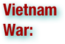

The Vietnam War was a Cold War-era military conflict that occurred in Vietnam, Laos, and Cambodia from 1 November 1955 to the fall of Saigon on 30 April 1975. This war followed the First Indochina War and was fought between North Vietnam, supported by its communist allies, and the government of South Vietnam, supported by the United States and other anti-communist nations. The Viet Cong, a lightly armed South Vietnamese communist-controlled common front, largely fought a guerrilla war against anti-communist forces in the region. The Vietnam People's Army (North Vietnamese Army) engaged in a more conventional war, at times committing large units into battle. U.S. and South Vietnamese forces relied on air superiority and overwhelming firepower to conduct search and destroy operations, involving ground forces, artillery and airstrikes. The U.S. government viewed involvement in the war as a way to prevent a communist takeover of South Vietnam as part of their wider strategy of containment. The North Vietnamese government viewed the war as a colonial war, fought initially against France, backed by the U.S., and later against South Vietnam, which it regarded as a U.S. puppet state. U.S. military advisers arrived beginning in 1950. U.S. involvement escalated in the early 1960s, with U.S. troop levels tripling in 1961 and tripling again in 1962. U.S. combat units were deployed beginning in 1965. Operations spanned borders, with Laos and Cambodia heavily bombed. Involvement peaked in 1968 at the time of the Tet Offensive. After this, U.S. ground forces were withdrawn as part of a policy called Vietnamization. Despite the Paris Peace Accords, signed by all parties in January 1973, fighting continued. U.S. military involvement ended on 15 August 1973 as a result of the Case–Church Amendment passed by the U.S. Congress. The capture of Saigon by the North Vietnamese army in April 1975 marked the end of the Vietnam War. North and South Vietnam were reunified the following year. The war exacted a huge human cost in terms of fatalities (See: Vietnam War casualties). Estimates of the number of Vietnamese soldiers and civilians killed vary from less than one million to more than three million. Some 200,000–300,000 Cambodians, 20,000–200,000 Laotians, and 58,220 U.S. service members also died in the conflict. (wikipedia.org. Accessed on September 1, 2011.)

The War of Attrition was a limited war fought between Israel and Egypt from 1967 to 1970. Following the 1967 Six Day War, there were no serious diplomatic efforts to resolve the issues at the heart of the Arab-Israeli conflict. In September 1967 Arab states formulated the "Three Nos" policy, barring peace, recognition or negotiations with Israel. Egyptian President Gamel Abdel Nasser believed only military initiative would compel Israel or the international community to force a full Israeli withdrawal from the Sinai, and hostilities soon resumed along the Suez Canal. These initially took the form of limited artillery duels and small scale incursions into the Sinai, but by 1969 the Egyptian Army was prepared for larger scaled operations. On March 8, 1969, Nasser proclaimed the official launch of the War of Attrition, characterized by large scale shelling along the Canal, extensive aerial warfare and commando raids. Hostilities continued until August 1970 and ended with a ceasefire, the frontiers remaining the same as when the war began, with no real commitment to serious peace negotiations. (wikipedia.org. Accessed on September 1, 2011.)

The Warsaw Treaty Organization of Friendship, Cooperation, and Mutual Assistance (1955–1991), or more commonly referred to as the Warsaw Pact, was a mutual defense treaty subscribed to by eight communist states in Eastern Europe. It was established at the Soviet Union's initiative and realized on 14 May 1955, in Warsaw. In the Communist Bloc, the treaty was the military analogue of the Council for Mutual Economic Assistance (CoMEcon), the communist (East) European economic community. The Warsaw Pact was the Soviet Bloc’s military response to West Germany’s May 1955 integration to the NATO Pact, per the Paris Pacts of 1954. (wikipedia.org. Accessed on September 1, 2011.)

On the night of 20–21 August 1968, the Soviet Union and her main allies in the Warsaw Pact – Bulgaria, the German Democratic Republic (East Germany), Hungary and Poland) – invaded the Czechoslovak Socialist Republic in order to halt Alexander Dubček's Prague Spring political liberalization reforms. In the operation, codenamed Danube, varying estimates of between 175,000 and 500,000 troops attacked Czechoslovakia; approximately 500 Czechs and Slovaks were wounded and 108 killed in the invasion. The invasion successfully stopped the liberalization reforms and strengthened the authority of the Communist Party of Czechoslovakia. The foreign policy of the Soviet Union during this era was known as the Brezhnev Doctrine. (wikipedia.org. Accessed on September 1, 2011.)
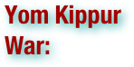

The Yom Kippur War, Ramadan War or October War, also known as the 1973 Arab-Israeli War and the Fourth Arab-Israeli War, was fought from October 6 to 25, 1973, between Israel and a coalition of Arab states led by Egypt and Syria. The war began when the coalition launched a joint surprise attack on Israel on Yom Kippur, the holiest day in Judaism, which coincided with the Muslim holy month of Ramadan. Egyptian and Syrian forces crossed ceasefire lines to enter the Israeli-held Sinai Peninsula and Golan Heights respectively, which had been captured and occupied since the 1967 Six-Day War. The conflict led to a near-confrontation between the two nuclear superpowers, the United States and the Soviet Union, both of whom initiated massive resupply efforts to their allies during the war. The war began with a massive and successful Egyptian crossing of the Suez Canal during the first three days, after which they dug in, settling into a stalemate. The Syrians coordinated their attack on the Golan Heights to coincide with the Egyptian offensive and initially made threatening gains against the greatly outnumbered Israelis. Within a week, Israel recovered and launched a four-day counter-offensive, driving deep into Syria. To relieve this pressure, the Egyptians went back on the offensive, but were decisively defeated; the Israelis then counterattacked at the seam between two Egyptian armies, crossed the Suez Canal, and advanced southward and westward in over a week of heavy fighting. An October 22 United Nations-brokered ceasefire quickly unraveled, with each side blaming the other for the breach. By 24 October, the Israelis had improved their positions considerably and completed their encirclement of Egypt's Third Army. This development led to tensions between the United States and the Soviet Union. As a result, a second ceasefire was imposed cooperatively on October 25 to end the war. At the conclusion of hostilities, Israeli forces were 40 kilometers (25 mi) from Damascus and 101 kilometers (63 mi) from Cairo. The war had far-reaching implications. The Arab World, which had been humiliated by the lopsided rout of the Egyptian-Syrian-Jordanian alliance in the Six-Day War, felt psychologically vindicated by early successes in the conflict. In Israel, despite impressive operational and tactical achievements on the battlefield, the war effectively ended its sense of invincibility and complacency. The war also challenged many American assumptions; the United States initiated new efforts at mediation and peacemaking. These changes paved the way for the subsequent peace process. The Camp David Accords that followed led to the return of the Sinai to Egypt and normalized relations—the first peaceful recognition of Israel by an Arab country. Egypt continued its drift away from the Soviet Union and left the Soviet sphere of influence entirely. (wikipedia.org. Accessed on September 1, 2011.)